<!doctype html>
<html lang="en">
<head>
  <meta charset="utf-8">
  <meta name="viewport" content="width=device-width, initial-scale=1">
  <title>arxiv digest — 2026-08-14</title>
  <style>
:root {
  --bg: #ffffff;
  --fg: #1f2328;
  --muted: #59636e;
  --border: #d0d7de;
  --card: #f6f8fa;
  --link: #0969da;
}
body {
  max-width: 980px;
  margin: 0 auto;
  padding: 2rem 1rem 5rem;
  font-family: -apple-system, BlinkMacSystemFont, "Segoe UI", Helvetica, Arial, sans-serif;
  line-height: 1.55;
  color: var(--fg);
  background: var(--bg);
}
a { color: var(--link); }
img { max-width: 100%; height: auto; }
pre, code { background: var(--card); border-radius: 6px; }
pre { padding: 1rem; overflow-x: auto; }
blockquote { border-left: 4px solid var(--border); padding-left: 1rem; color: var(--muted); }
details { margin: 0.6rem 0; }
summary { cursor: pointer; font-weight: 600; }
.paper-figures-scroll {
  display: flex;
  gap: 1rem;
  overflow-x: auto;
  overscroll-behavior-x: contain;
  padding: 0.75rem 0.25rem 1rem;
  margin: 1rem 0 1.25rem;
  border-top: 1px solid var(--border);
  border-bottom: 1px solid var(--border);
  scroll-snap-type: x proximity;
}
.paper-figure-card {
  flex: 0 0 min(260px, 72vw);
  scroll-snap-align: start;
  background: var(--card);
  border: 1px solid var(--border);
  border-radius: 12px;
  padding: 0.55rem;
}
.paper-figure-card img {
  display: block;
  width: 100%;
  max-height: 240px;
  object-fit: contain;
  background: white;
  border-radius: 8px;
}
.paper-figure-caption {
  display: block;
  margin-top: 0.5rem;
  color: var(--muted);
  font-size: 0.85rem;
}
.figure-strip-hint {
  color: var(--muted);
  font-size: 0.9rem;
  margin-bottom: -0.3rem;
}
</style>
  <!-- MathJax: renders $...$ inline math and $$...$$ display math, plus
       \(...\) and \[...\]. Loaded from the official CDN; works offline
       once cached. Configured to skip code/pre blocks so arxiv IDs that
       look like dollar amounts don't get mangled. -->
  <script>
    window.MathJax = {
      tex: {
        inlineMath: [['$', '$'], ['\\(', '\\)']],
        displayMath: [['$$', '$$'], ['\\[', '\\]']],
        processEscapes: true,
        processEnvironments: true
      },
      options: {
        skipHtmlTags: ['script', 'noscript', 'style', 'textarea', 'pre', 'code'],
        ignoreHtmlClass: 'tex2jax_ignore',
        processHtmlClass: 'tex2jax_process'
      }
    };
  </script>
  <script id="MathJax-script" async
    src="https://cdn.jsdelivr.net/npm/mathjax@3/es5/tex-chtml.js"></script>
</head>
<body>
<header style="background-color: #333; color: white; padding: 15px; margin-bottom: 20px;">
  <h1 style="margin: 0; font-size: 24px;">
    <a href="https://ochelpan.github.io/arXiv_clean/" style="color: white; text-decoration: none;">Main</a>
  </h1>
</header>

<h1>Daily arXiv Report</h1>

<hr>
<p>
<a href="index.html">← Index</a>
 · <a href="papers_03.html">← Previous</a> · <a href="papers_05.html">Next →</a>
</p>
<hr>

<h2>Papers 61–80</h2>
<p><a id="paper-2608.12234"></a></p>
<h3 id="capability-adaptive-cryptanalysis-with-reduced-space-quantum-verification"><a href="http://arxiv.org/abs/2608.12234v1">Capability-Adaptive Cryptanalysis with Reduced-Space Quantum Verification</a></h3>
<p><strong>Authors:</strong> Nivedita Dey, Mrityunjay Ghosh, Pranav Kaushal, Abhinab Khare, Amlan Chakrabarti<br>
<strong>Type:</strong> theory · <strong>Category:</strong> quantum information and computing · <strong>PDF:</strong> <a href="https://arxiv.org/pdf/2608.12234v1">https://arxiv.org/pdf/2608.12234v1</a><br>
<strong>Analysis basis:</strong> full PDF text, analyzed in chunks
<strong>Topic relevance:</strong> <code>quantum measurements</code> <strong>2/5</strong></p>
<div class="figure-strip-hint">↔ Scroll figures horizontally</div>
<div class="paper-figures-scroll">
<figure class="paper-figure-card">
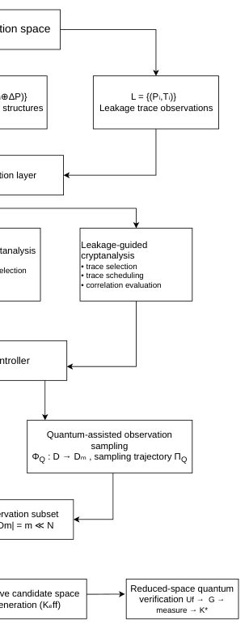
<figcaption class="paper-figure-caption"><b>Fig 1.</b> Fig. 1 Quantum-assisted observation sampling within capability-adaptive cryptanalysis. The framework incorporates quantum-generated randomness exclusively during observation selection, differential-pair selection, and leakage-trace selection stages without altering the subsequent candidate-space reduction or reduced-space quantum verification procedures. [21]</figcaption>
</figure>
<figure class="paper-figure-card">
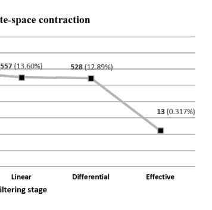
<figcaption class="paper-figure-caption"><b>Fig 2.</b> Fig. 2 Progressive contraction of the candidate-key hypothesis space under the adaptive cryptana- lytic filtering framework. Starting from an initial space of 4096 hypotheses, successive filtering stages substantially reduce the admissible candidate set, yielding an effective candidate space of only 13 hypotheses prior to quantum verification.</figcaption>
</figure>
</div>

<p><strong>Summary.</strong> The paper introduces an adaptive framework that merges multiple classical cryptanalytic techniques (linear, differential, side-channel) to aggressively filter a large key hypothesis space. This reduction allows subsequent quantum verification using amplitude amplification to operate on a much smaller effective space, drastically cutting down the required computational resources for breaking cryptographic systems.</p>
<p><strong>Why it may be interesting.</strong> This work provides a concrete theoretical blueprint for optimizing quantum algorithms applied to classical security problems, showing how pre-processing steps can drastically reduce resource requirements (qubits, time) for quantum computation in cryptography.</p>
<details>
<summary>Detailed structure</summary>
<p><strong>Main problem.</strong> The core challenge is efficiently integrating classical cryptanalytic evidence (from linear, differential, and side-channel analysis) with quantum verification in hybrid classical-quantum cryptanalysis.</p>
<p><strong>Main result.</strong> The proposed framework demonstrates that adaptive classical filtering can substantially reduce the initial key hypothesis space (e.g., 4096 to 13 candidates), leading to a significant reduction (approx. 25-fold) in required quantum verification effort via reduced-space amplitude amplification.</p>
<p><strong>Method.</strong> A capability-adaptive framework is developed that first uses statistical filtering based on multiple cryptanalytic techniques to contract the candidate key space, followed by applying reduced-space quantum verification using amplitude amplification.</p>
<p><strong>Model / system.</strong> The model applies to symmetric-key cryptographic primitives ($\Pi$). The theoretical structure involves defining a formal mathematical model for candidate-space construction and adaptive filtering, culminating in a Hamiltonian formulation for physically realizing the reduced-space quantum verification process.</p>
<p><strong>Key observables.</strong> Candidate-key hypothesis space size (e.g., 4096 initial $  o$ 13 effective), Grover iteration requirement reduction (50 to 2 iterations), and target-state success probability ($\approx 94.53\%$).</p>
<p><strong>Important parameters / regimes.</strong> The complexity is characterized by the relationship between candidate-space contraction and quantum verification effort, quantified using metrics like linear approximation bias ($\hat{\epsilon}_i$) and differential characteristic probabilities ($P_i$).</p>
<p><strong>Assumptions / limitations.</strong> The framework assumes that classical filtering can accurately contract the search space while preserving cryptanalytic admissibility, allowing the use of reduced-space quantum algorithms.</p>
<p><strong>Figures summary.</strong> Figure 1 illustrates the overall process flow: Quantum-assisted observation sampling $
ightarrow$ Effective candidate space generation ($K_{	ext{eff}}$) $
ightarrow$ Reduced-space quantum verification. Tables summarize contraction statistics and complexity reduction.</p>
<p><strong>Paper structure.</strong> The paper builds by first defining the need for unification, developing a formal mathematical model encompassing candidate-space construction (using linear/differential/leakage analysis), and finally demonstrating the quantitative benefits of reduced-space quantum verification using amplitude amplification on the filtered set.</p>
</details>
<details>
<summary>Abstract</summary>
<p>Efficient integration of cryptanalytic evidence with quantum verification remains a fundamental challenge in hybrid classical-quantum cryptanalysis. This work presents a capability-adaptive cryptanalytic framework that unifies linear cryptanalysis, differential cryptanalysis, and side-channel leakage analysis within a common candidate-space reduction architecture, followed by reduced-space quantum verification through amplitude amplification. A formal mathematical model is developed for candidate-space construction, adaptive filtering, verification-space reduction, and complexity characterization, supported by the oretical results establishing the relationship between candidate-space contraction and quantum verification effort. A Hamiltonian formulation is further introduced to provide a physically realizable interpretation of the reduced-space verification process. Evaluation using statistically generated cryptanalytic observations demonstrates that the proposed framework reduces an initial candidate-key hypothesis space of 4096 candidates to an effective candidate space of 13 hypotheses, corresponding to an overall reduction of approximately 99.683%. Consequently, the Grover verification requirement decreases from 50 iterations to only 2 iterations, yielding an approximately 25-fold reduction in verification effort, while reduced-space amplitude amplification achieves a target-state success probability of approximately 94.53%. These results demonstrate that adaptive cryptanalytic filtering can substantially reduce quantum verification complexity while preserving cryptanalytic admissibility, providing a practical foundation for capability-aware hybrid cryptanalysis and reduced-space quantum search.</p>
</details>
<p><sub><a href="#top">↑ back to top</a></sub></p>

<p><a id="paper-2608.11880"></a></p>
<h3 id="density-selected-topological-pathways-in-the-melting-of-single-particle-thick-stripes"><a href="http://arxiv.org/abs/2608.11880v1">Density-Selected Topological Pathways in the Melting of Single-Particle-Thick Stripes</a></h3>
<p><strong>Authors:</strong> José Rafael Bordin<br>
<strong>Type:</strong> theory · <strong>Category:</strong> statistical mechanics · <strong>PDF:</strong> <a href="https://arxiv.org/pdf/2608.11880v1">https://arxiv.org/pdf/2608.11880v1</a><br>
<strong>Analysis basis:</strong> full PDF text, analyzed in chunks
<strong>Topic relevance:</strong> <code>Frenkel-Kontorova</code> <strong>1/5</strong> · <code>analog quantum simulation</code> <strong>1/5</strong> · <code>driven-dissipative phase transition</code> <strong>1/5</strong> · <code>non-equilibrium universality</code> <strong>1/5</strong></p>
<div class="figure-strip-hint">↔ Scroll figures horizontally</div>
<div class="paper-figures-scroll">
<figure class="paper-figure-card">
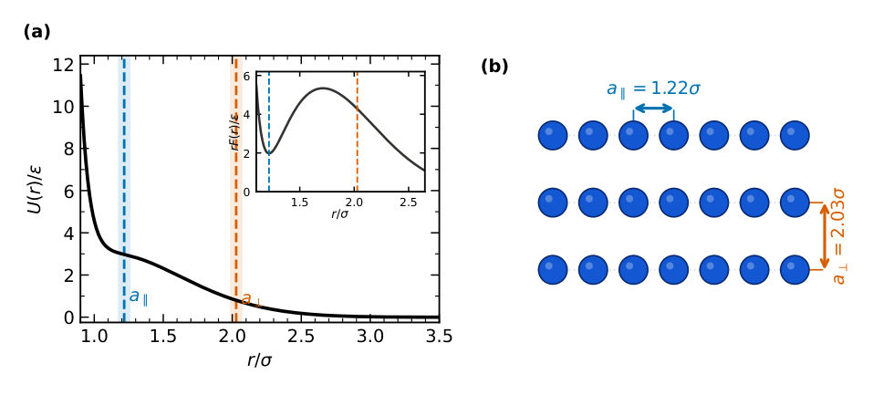
<figcaption class="paper-figure-caption"><b>Fig 1.</b> FIG. 1. Interaction model and microscopic organization of the stripe phase. (a) Lennard-Jones–</figcaption>
</figure>
<figure class="paper-figure-card">
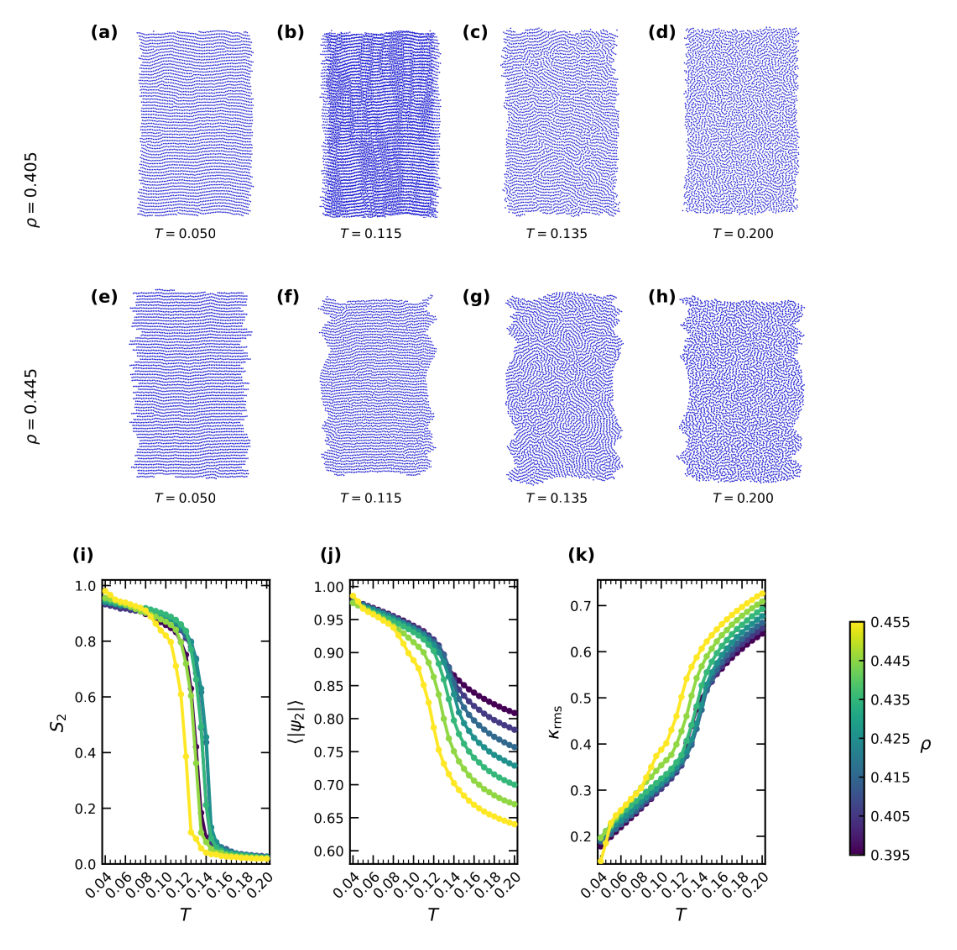
<figcaption class="paper-figure-caption"><b>Fig 2.</b> FIG. 2. Density-selected pathways in the melting of one-particle-thick stripes. Representative</figcaption>
</figure>
<figure class="paper-figure-card">
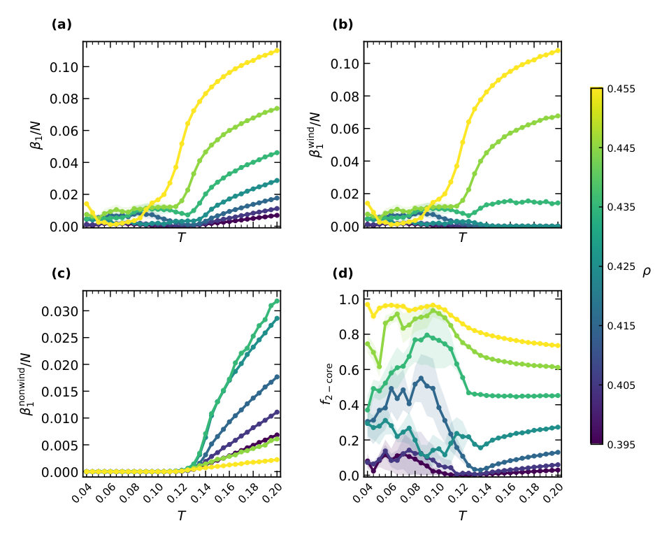
<figcaption class="paper-figure-caption"><b>Fig 3.</b> FIG. 3. Topological reconstruction during heating for the seven densities. (a) First Betti number</figcaption>
</figure>
<figure class="paper-figure-card">
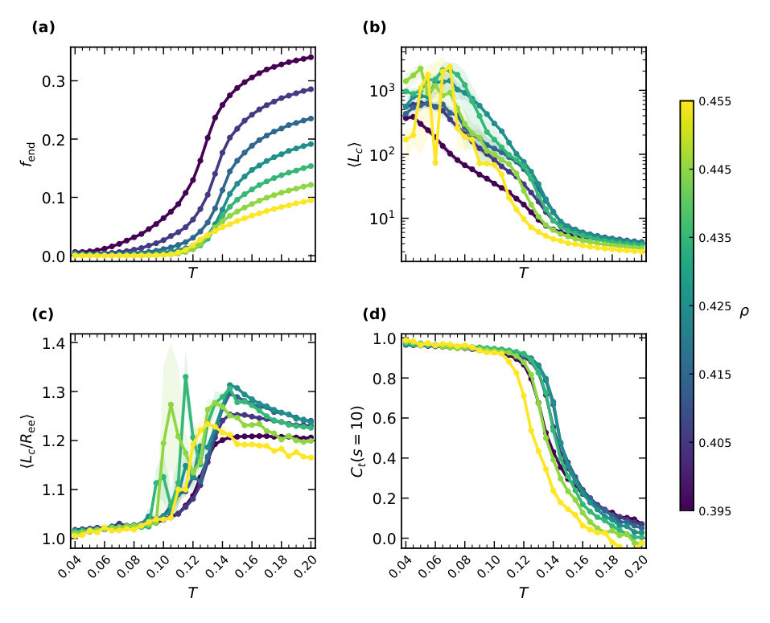
<figcaption class="paper-figure-caption"><b>Fig 4.</b> FIG. 4. Evolution of filament geometry during heating. (a) Endpoint fraction, (b) mean contour</figcaption>
</figure>
<figure class="paper-figure-card">
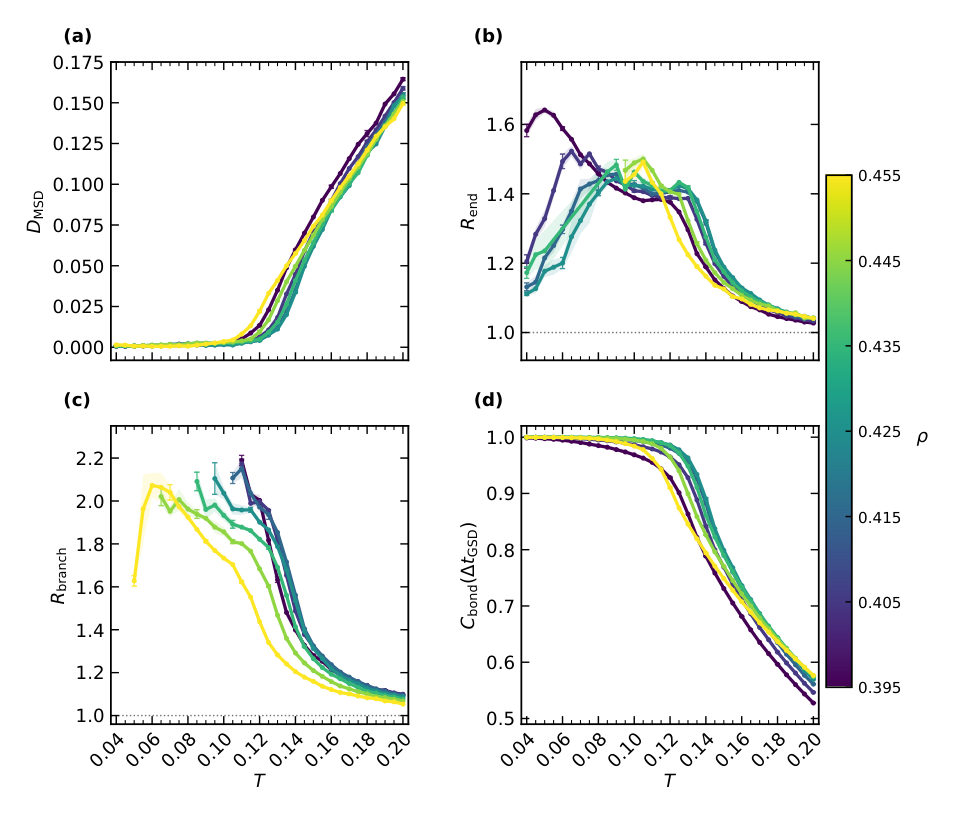
<figcaption class="paper-figure-caption"><b>Fig 5.</b> FIG. 5. Coupling between local connectivity and dynamics. (a) Long-time diffusion coefficient</figcaption>
</figure>
</div>

<p><strong>Summary.</strong> This work simulates the melting of stripe phases in a 2D system, finding that density dictates the final fluid topology. The authors demonstrate that simple thermodynamic measurements fail to capture this complexity; only advanced topological observables can distinguish between a fragmented cluster state and a continuous network state.</p>
<p><strong>Why it may be interesting.</strong> While focused on classical soft matter physics, the reliance on topological invariants (like Betti numbers) to characterize phase transitions and connectivity changes mirrors concepts used in analyzing complex quantum many-body ground states or entanglement structures.</p>
<details>
<summary>Detailed structure</summary>
<p><strong>Main problem.</strong> The study investigates how the melting of stripe-forming systems changes connectivity, specifically determining if the resulting fluid topology is uniquely determined by the initial ordered state or if it is instead selected by the system's density.</p>
<p><strong>Main result.</strong> The topological outcome of the melt—whether the filaments fragment into finite clusters or remain in a dynamically fluid, system-spanning network—is strongly dependent on the particle density ($
ho$).</p>
<p><strong>Method.</strong> Molecular dynamics simulations are performed along isochoric heating paths using various structural, orientational, and advanced graph-based topological observables.</p>
<p><strong>Model / system.</strong> The model is a two-dimensional system of particles interacting via a Lennard-Jones plus Gaussian (LJG) pair potential, which stabilizes one-particle-thick stripe phases at low temperatures.</p>
<p><strong>Key observables.</strong> Topological descriptors like the first Betti number ($eta_1$), graph 2-core fraction ($f_{2-	ext{core}}$), and connectivity measures are crucial alongside standard thermodynamic quantities like isochoric heat capacity ($c_V$).</p>
<p><strong>Important parameters / regimes.</strong> The analysis spans seven densities ($
ho = 0.395$ to $0.455$) across the stripe-forming regime, as well as varying temperatures during heating.</p>
<p><strong>Assumptions / limitations.</strong> Conventional scalar order parameters are insufficient because they cannot distinguish between a system-spanning network and finite clusters when local packing is similar; thus, topological diagnostics are necessary.</p>
<p><strong>Figures summary.</strong> Figures summarize the density dependence of structural metrics (like nematic order $S_2$) during melting, showing that while global order decays uniformly, the topological structure diverges based on $
ho$.</p>
<p><strong>Paper structure.</strong> The paper analyzes the multistage reconstruction upon heating, contrasting the behavior observed using only thermodynamic/orientational data versus the richer information provided by graph-based topology to distinguish between different fluid states.</p>
</details>
<details>
<summary>Abstract</summary>
<p>The melting of stripe-forming systems involves changes in connectivity that are not fully captured by conventional structural and orientational descriptors. We investigate a two-dimensional model with competing interactions whose low-temperature phase consists of one-particle-thick stripes. Molecular dynamics simulations along seven heating isochores are analyzed using thermodynamic, orientational, dynamical, and graph-based observables. Heating produces a multistage reconstruction in which the loss of stripe alignment and the reorganization of filament connectivity occur over distinct temperature ranges. Density controls whether the disordered filaments fragment into finite polymer-like clusters or remain joined in a dynamically fluid, system-spanning network. The topological observables distinguish these outcomes, which are not resolved by the thermodynamic and orientational responses alone. Thus, the same ordered stripe microphase can melt into topologically distinct fluids selected by density.</p>
</details>
<p><sub><a href="#top">↑ back to top</a></sub></p>

<p><a id="paper-2608.12245"></a></p>
<h3 id="a-sharp-bound-on-spacetime-distance-from-quantum-entanglement"><a href="http://arxiv.org/abs/2608.12245v1">A sharp bound on spacetime distance from quantum entanglement</a></h3>
<p><strong>Authors:</strong> Zhi-Wei Wang, Arshid Shabir, Mir Faizal, Samuel L. Braunstein<br>
<strong>Type:</strong> theory · <strong>Category:</strong> other · <strong>PDF:</strong> <a href="https://arxiv.org/pdf/2608.12245v1">https://arxiv.org/pdf/2608.12245v1</a><br>
<strong>Analysis basis:</strong> full PDF text, analyzed in chunks
<strong>Topic relevance:</strong> <code>Keldysh / 2PI / non-Gaussian methods</code> <strong>1/5</strong> · <code>correlated / nonlocal dissipation</code> <strong>1/5</strong> · <code>quantum measurements</code> <strong>1/5</strong></p>
<div class="figure-strip-hint">↔ Scroll figures horizontally</div>
<div class="paper-figures-scroll">
<figure class="paper-figure-card">
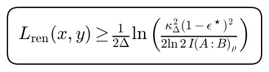
<figcaption class="paper-figure-caption"><b>Fig 1.</b> Figure 1. The metric-from-information bound. Left: when boundary regions A and B are nearby, so that I(A : B) is large, the MfI bound permits a short bulk geodesic between the corresponding points x and y. Right: when A and B are far apart, so that I(A : B) is small, the bound forces the bulk geodesic to be long. A heavy probe O∆propagates along the bulk geodesic of renormalised length Lren(x, y).</figcaption>
</figure>
<figure class="paper-figure-card">
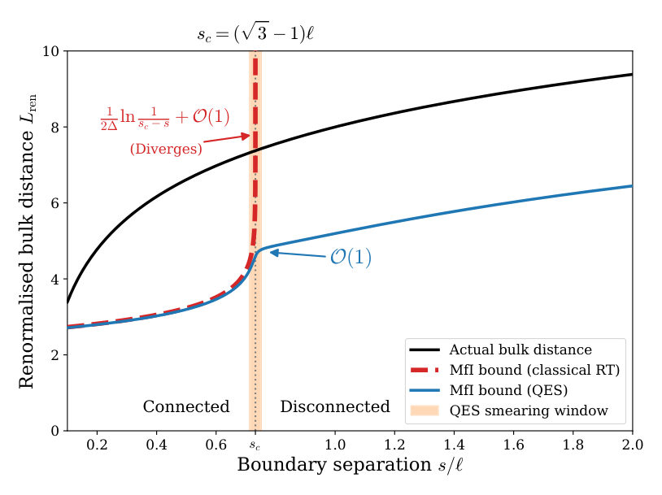
<figcaption class="paper-figure-caption"><b>Fig 2.</b> Figure 2. MfI bound at the entanglement-wedge phase transition for parallel strips in AdS5/CFT4. Black: the actual bulk geodesic distance, which is finite everywhere. Red dashed: the MfI bound evaluated with the classical RT mutual information, which diverges logarithmically at the critical separation sc = ( √</figcaption>
</figure>
</div>

<p><strong>Summary.</strong> This work provides a quantitative link between quantum entanglement and spacetime geometry by deriving a 'metric-from-information' lower bound. It shows that the amount of boundary mutual information dictates how far apart points can be in the bulk spacetime, offering a powerful diagnostic tool beyond classical area laws.</p>
<p><strong>Why it may be interesting.</strong> While focused on gravity/QFT, the core methodology—using entanglement measures like mutual information to constrain geometric properties—is highly relevant for understanding quantum correlations in open quantum systems.</p>
<details>
<summary>Detailed structure</summary>
<p><strong>Main problem.</strong> To establish a quantitative, metric counterpart showing how boundary mutual information constrains the bulk geodesic separation distance within holographic spacetime settings.</p>
<p><strong>Main result.</strong> The paper derives a rigorous lower bound (Metric-from-information bound) stating that vanishing mutual information forces the allowed bulk geodesic separation to diverge logarithmically.</p>
<p><strong>Method.</strong> It combines quantum information measures, specifically Mutual Information $I(A:B)$, with holographic dictionary relations linking two-point functions to renormalized geodesic lengths $ ext{L}_{    ext{ren}}(x, y)$.</p>
<p><strong>Model / system.</strong> The analysis is set in the context of AdS/CFT correspondence and involves calculating bounds for a boundary manifold $\Sigma$ with disjoint regions $A$ and $B$. Specific applications include parallel strips in AdS$_5$/CFT$_4$.</p>
<p><strong>Key observables.</strong> Boundary Mutual Information ($I(A:B)$) and renormalized Bulk Geodesic Distance ($   ext{L}_{    ext{ren}}(x, y)$).</p>
<p><strong>Important parameters / regimes.</strong> The bound depends on calibration constants $\kappa_\Delta$ and $\epsilon_\star$, and the analysis distinguishes between semiclassical regimes.</p>
<p><strong>Assumptions / limitations.</strong> The derivation relies on operating within a semiclassical holographic code subspace and assumes controlled truncation errors ($\epsilon_{	ext{code}} \ll 1$).</p>
<p><strong>Figures summary.</strong> Figure 1 illustrates how short geodesics are permitted when $I(A:B)$ is large, while long geodesics are forced when $I(A:B)$ is small.</p>
<p><strong>Paper structure.</strong> The paper progresses from establishing a pairwise metric-from-information bound (Theorem 1) to extending this local inequality to global connectivity via a multiscale iteration (Theorem 2).</p>
</details>
<details>
<summary>Abstract</summary>
<p>Ryu-Takayanagi established how boundary entanglement encodes bulk area. We provide the metric counterpart: boundary mutual information imposes a rigorous lower bound on bulk geodesic separation that diverges logarithmically as correlations vanish. A multiscale iteration promotes this local inequality to a global obstruction to bulk connectivity. For parallel strips in AdS$_5$/CFT$_4$, the bound necessitates a quantum resolution of the classical mutual-information transition and fixes the asymptotic growth of geodesic distance.</p>
</details>
<p><sub><a href="#top">↑ back to top</a></sub></p>

<p><a id="paper-2608.11503"></a></p>
<h3 id="joint-symmetry-and-dynamical-accessibility-in-compact-hamiltonian-encodings-of-set-cover"><a href="http://arxiv.org/abs/2608.11503v1">Joint symmetry and dynamical accessibility in compact Hamiltonian encodings of set cover</a></h3>
<p><strong>Authors:</strong> Fabricio de Souza Luiz<br>
<strong>Type:</strong> theory · <strong>Category:</strong> quantum information and computing · <strong>PDF:</strong> <a href="https://arxiv.org/pdf/2608.11503v1">https://arxiv.org/pdf/2608.11503v1</a><br>
<strong>Analysis basis:</strong> full PDF text, analyzed in chunks
<strong>Topic relevance:</strong> <code>analog quantum simulation</code> <strong>1/5</strong> · <code>driven-dissipative phase transition</code> <strong>1/5</strong> · <code>methods for driven-dissipative</code> <strong>1/5</strong></p>
<div class="figure-strip-hint">↔ Scroll figures horizontally</div>
<div class="paper-figures-scroll">
<figure class="paper-figure-card">
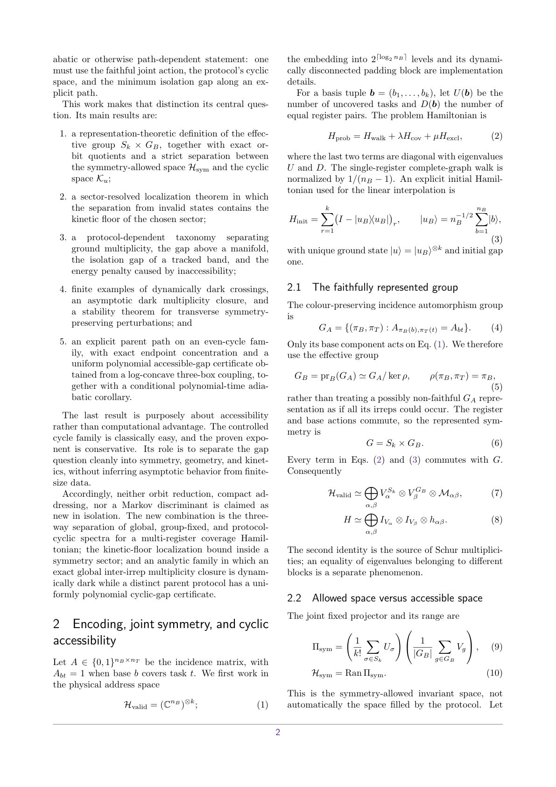
<figcaption class="paper-figure-caption"><b>Fig 1.</b> Low-resolution page preview, page 2</figcaption>
</figure>
<figure class="paper-figure-card">
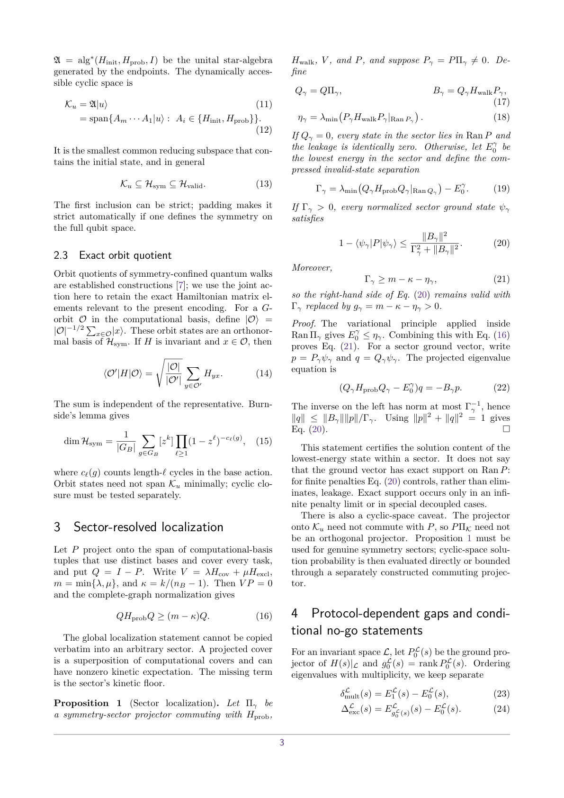
<figcaption class="paper-figure-caption"><b>Fig 2.</b> Low-resolution page preview, page 3</figcaption>
</figure>
<figure class="paper-figure-card">
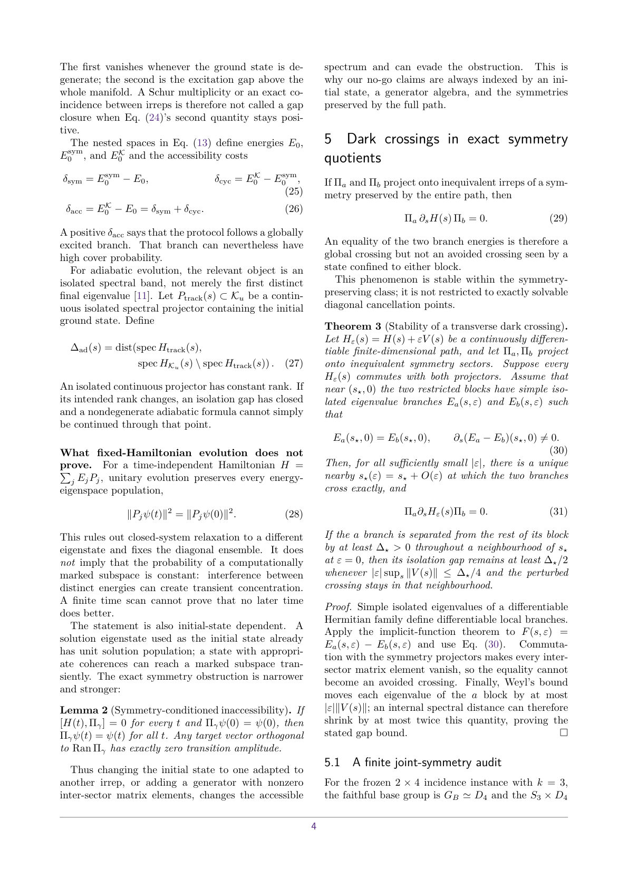
<figcaption class="paper-figure-caption"><b>Fig 3.</b> Low-resolution page preview, page 4</figcaption>
</figure>
<figure class="paper-figure-card">
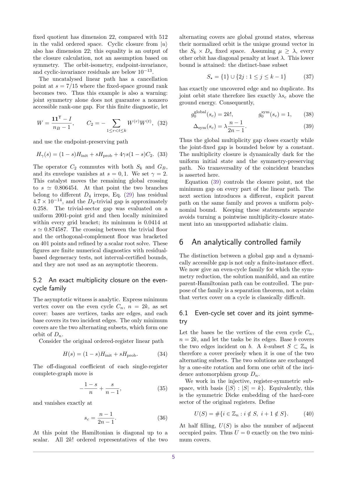
<figcaption class="paper-figure-caption"><b>Fig 4.</b> Low-resolution page preview, page 5</figcaption>
</figure>
<figure class="paper-figure-card">
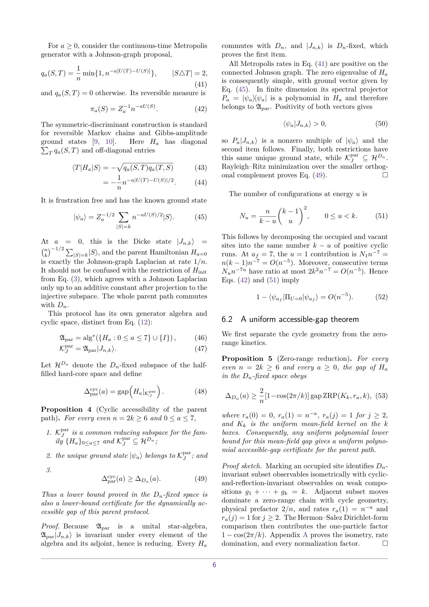
<figcaption class="paper-figure-caption"><b>Fig 5.</b> Low-resolution page preview, page 6</figcaption>
</figure>
</div>

<p><strong>Summary.</strong> This theoretical paper analyzes the spectral properties of quantum Hamiltonians used to encode NP-hard problems like Set Cover. It rigorously distinguishes between the full symmetry-allowed spectrum and the subspace actually reachable by the system's dynamics. The work provides structural guarantees regarding adiabatic evolution times, establishing a fundamental separation between potential symmetries and actual physical accessibility.</p>
<p><strong>Why it may be interesting.</strong> The rigorous separation of accessible spectral structure is highly relevant to understanding the limitations and guarantees of quantum computation protocols based on Hamiltonian simulation or annealing.</p>
<details>
<summary>Detailed structure</summary>
<p><strong>Main problem.</strong> The research addresses which parts of a Hamiltonian spectrum are physically relevant when both the initial state preparation and subsequent time evolution preserve multiple symmetries, specifically for encoding Minimum Set Cover.</p>
<p><strong>Main result.</strong> The authors establish a rigorous structural separation between the global symmetry-allowed spectral structure and the dynamically accessible cyclic subspace. They derive bounds on the adiabatic runtime conditional on specific state preparations.</p>
<p><strong>Method.</strong> The analysis employs advanced mathematical tools including sector-resolved localization, analyzing algebraic structures generated by Hamiltonians, and deriving gap estimates using techniques related to Dirichlet forms and coupling arguments.</p>
<p><strong>Model / system.</strong> The model is a compact multi-register quantum encoding of the Minimum Set Cover problem. The dynamics are governed by complex Hamiltonians involving walk terms, cover constraints, and exclusion terms acting on multiple registers.</p>
<p><strong>Key observables.</strong> Joint fixed excitation gap, sector-resolved leakage bounds ($\Gamma_\gamma$), and the dynamically accessible cyclic space ($\mathcal{K}_u$).</p>
<p><strong>Important parameters / regimes.</strong> The size of the problem instance ($n$), the number of registers, and parameters governing the Hamiltonian components ($\lambda, \mu$).</p>
<p><strong>Assumptions / limitations.</strong> No quantum speedup claim is made; the results are structural separations. The analysis relies on specific conditions for symmetry sectors and state preparation (e.g., Dicke-state preparation).</p>
<p><strong>Paper structure.</strong> The paper progresses by defining the physical system and Hamiltonian, establishing the relationship between different spectral subspaces ($H_{	ext{sym}}$ vs $\mathcal{K}_u$), proving localization bounds (Proposition 1), constructing explicit parent paths for specific families, and finally deriving polynomial adiabatic runtime estimates.</p>
</details>
<details>
<summary>Abstract</summary>
<p>Which part of a Hamiltonian spectrum is physically relevant when both the initial state and interpolation preserve several symmetries? We address this question for a compact multi-register encoding of Minimum Set Cover. The represented symmetry combines register permutations with the faithful base action of the incidence automorphism group. We distinguish its fixed, symmetry-allowed space from the generally smaller cyclic space generated by the protocol and define gaps relative to isolated bands in that space. A sector-resolved Schur-complement bound certifies cover-measurement probability whenever the sector contains feasible covers and has positive invalid-state separation; the sector kinetic floor is essential. Exact orbit quotients expose inter-sector coincidences invisible to a symmetric protocol, while a stability theorem shows that transverse dark crossings persist under small symmetry-preserving perturbations. On an even-cycle family, the original linear interpolation has an exact global multiplicity closure while the joint-fixed excitation gap remains constant. For the same family we construct a Johnson/Metropolis parent path from a Dicke state to a Gibbs-amplitude state with cover probability $1-O(n^{-5})$. A zero-range comparison and a log-concave three-box coupling give the uniform cyclic-gap certificate $Ω(n^{-13})$. Quantitative derivative bounds then yield a polynomial adiabatic runtime in the abstract Hamiltonian-access model, conditional on Dicke-state preparation and access to the parent Hamiltonian. We make no quantum-speedup claim: the result is a rigorous separation of global, symmetry-allowed, and dynamically accessible spectral structure. Changing the initial state or breaking a preserved symmetry changes that accessible spectrum.</p>
</details>
<p><sub><a href="#top">↑ back to top</a></sub></p>

<p><a id="paper-2608.11429"></a></p>
<h3 id="on-the-swapping-capacity-of-a-quantum-repeater"><a href="http://arxiv.org/abs/2608.11429v1">On the Swapping Capacity of a Quantum Repeater</a></h3>
<p><strong>Authors:</strong> Van Sy Mai, Richard J. La, Abdella Battou, Abderrahim Amlou, Cory Nunn<br>
<strong>Type:</strong> theory · <strong>Category:</strong> quantum information and computing · <strong>PDF:</strong> <a href="https://arxiv.org/pdf/2608.11429v1">https://arxiv.org/pdf/2608.11429v1</a><br>
<strong>Analysis basis:</strong> full PDF text, analyzed in chunks
<strong>Topic relevance:</strong> <code>correlated / nonlocal dissipation</code> <strong>1/5</strong> · <code>methods for driven-dissipative</code> <strong>1/5</strong> · <code>quantum measurements</code> <strong>1/5</strong></p>
<div class="figure-strip-hint">↔ Scroll figures horizontally</div>
<div class="paper-figures-scroll">
<figure class="paper-figure-card">
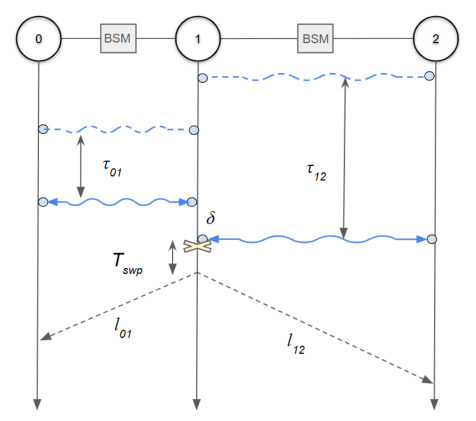
<figcaption class="paper-figure-caption"><b>Fig 1.</b> Fig. 1: Timeline of a path with 3 quantum nodes. Each quantum channel is equipped with a photonic BSM station in the middle. Dashed and solid wavy lines indicate when entanglement generation attempts start with photon emissions and succeed with heralds acknowledged, respectively. Here, δ is the waiting time to swap, Tswp the swapping time, and ℓij one-way latency between node i and node j.</figcaption>
</figure>
<figure class="paper-figure-card">
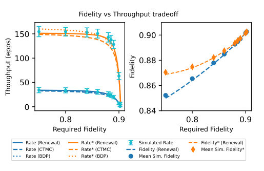
<figcaption class="paper-figure-caption"><b>Fig 2.</b> Fig. 2: Comparison of models and simulation in unit-memory case. Rate* and Fidelity* correspond to near ideal setting with parameters: ηmem = 0.9, ηd = 1 and deterministic swapping q = 1. Error bars denote means and standard deviations of simulation results.</figcaption>
</figure>
<figure class="paper-figure-card">
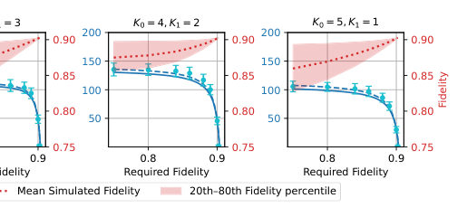
<figcaption class="paper-figure-caption"><b>Fig 3.</b> Fig. 3: Throughput and fidelity when varying memory allocation and multiplexing.</figcaption>
</figure>
<figure class="paper-figure-card">
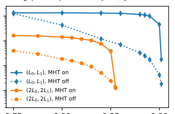
<figcaption class="paper-figure-caption"><b>Fig 4.</b> Fig. 5: Comparing throughput with and without model-based MHTs.</figcaption>
</figure>
<figure class="paper-figure-card">
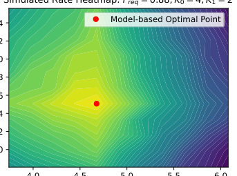
<figcaption class="paper-figure-caption"><b>Fig 5.</b> Fig. 4: Average throughput when varying MHTs Wi.</figcaption>
</figure>
</div>

<p><strong>Summary.</strong> This paper develops queueing models to analyze the capacity of memory-based quantum repeaters, balancing the trade-off between high entanglement throughput and maintaining a minimum required fidelity. By incorporating detailed noise dynamics from quantum memories and Bell State Measurements, the authors show that optimizing the maximum waiting times in these memories is key to maximizing usable network performance.</p>
<p><strong>Why it may be interesting.</strong> This work provides a rigorous theoretical framework connecting resource management (memory time limits) directly to performance metrics (rate vs. fidelity), which is crucial for designing practical quantum communication networks.</p>
<details>
<summary>Detailed structure</summary>
<p><strong>Main problem.</strong> The study focuses on optimizing the End-to-End (E2E) entanglement throughput of a memory-based quantum repeater while satisfying a minimum required fidelity constraint.</p>
<p><strong>Main result.</strong> Optimal performance requires treating the maximum waiting times in quantum memories as optimization variables, leading to model-derived optimal holding times that significantly boost achievable throughput compared to unconstrained scenarios.</p>
<p><strong>Method.</strong> The authors employ queueing models and stochastic process theory (e.g., CTMC) to approximate the system's rate dynamics under decoherence constraints.</p>
<p><strong>Model / system.</strong> The model describes a quantum repeater network with two links, utilizing quantum memories subject to dephasing and depolarizing noise during entanglement swapping operations.</p>
<p><strong>Key observables.</strong> E2E entanglement throughput (rate), average E2E fidelity ($F_{	ext{req}}$).</p>
<p><strong>Important parameters / regimes.</strong> Memory capacities, entanglement attempt rates, classical communication latencies, and the maximum waiting times (MHTs) in quantum memories.</p>
<p><strong>Assumptions / limitations.</strong> The analysis assumes independent Poisson generation of elementary entanglements and models decoherence using time-dependent depolarizing/dephasing channels; it does not consider entanglement purification.</p>
<p><strong>Figures summary.</strong> Figures illustrate the timeline of entanglement attempts, show the throughput vs. fidelity trade-off curve, and compare performance when optimal model-based MHTs are enforced versus when they are ignored.</p>
<p><strong>Paper structure.</strong> The paper develops queueing models to approximate E2E throughput, derives an expression for E2E fidelity accounting for memory noise and BSM errors, formulates the problem as maximizing rate subject to fidelity constraints, and validates this using simulations.</p>
</details>
<details>
<summary>Abstract</summary>
<p>We study the capacity of a memory-based quantum repeater in entanglement swapping between two quantum links with either single or multiple memories, which we refer to as the end-to-end (E2E) entanglement throughput, subject to a constraint on the minimum fidelity. In order to approximate the E2E entanglement throughput, we adopt queueing models, where quantum links can have different characteristics: memory capacities, entanglement attempt rates and success probabilities, as well as classical communication latencies. We develop a model for estimating E2E entanglement fidelity, while taking into account the heterogeneous dephasing and depolarizing dynamics of quantum memories and Bell-state measurements in entanglement swapping as well as classical communication delays and noises. Finally, with the help of our models for approximating the E2E entanglement throughput and fidelity, we use the maximum waiting times of entanglements in quantum memories at the repeater as optimization variables to maximize the E2E entanglement throughput while ensuring required minimum E2E fidelity.</p>
</details>
<p><sub><a href="#top">↑ back to top</a></sub></p>

<p><a id="paper-2608.11309"></a></p>
<h3 id="spectrally-local-geometric-response-at-the-onset-of-many-body-quantum-chaos"><a href="http://arxiv.org/abs/2608.11309v1">Spectrally local geometric response at the onset of many-body quantum chaos</a></h3>
<p><strong>Authors:</strong> George Mihailescu, Pablo M. Poggi<br>
<strong>Type:</strong> theory · <strong>Category:</strong> statistical mechanics · <strong>PDF:</strong> <a href="https://arxiv.org/pdf/2608.11309v1">https://arxiv.org/pdf/2608.11309v1</a><br>
<strong>Analysis basis:</strong> abstract only; PDF text extraction failed or PDF unavailable
<strong>Topic relevance:</strong> <code>analog quantum simulation</code> <strong>1/5</strong> · <code>non-equilibrium universality</code> <strong>1/5</strong> · <code>scars &amp; prethermalization</code> <strong>1/5</strong></p>
<p><strong>Summary.</strong> This paper introduces the spectral density of geometric response as a diagnostic tool to study how many-body quantum systems transition from integrable to chaotic behavior. It reveals that this crossover involves an initial localization of eigenbasis deformations before they spread across the spectrum. The findings suggest universal features governing chaos onset that are not captured by simple random matrix models.</p>
<p><strong>Why it may be interesting.</strong> This work provides a quantitative measure (spectral density) for tracking the onset of quantum chaos in complex many-body dynamics, which is relevant for understanding thermalization and energy transport in interacting systems.</p>
<details>
<summary>Detailed structure</summary>
<p><strong>Main problem.</strong> The paper investigates how quantum systems transition from integrable regimes towards chaos, focusing on spectral properties.</p>
<p><strong>Main result.</strong> It finds that the crossover to chaos is characterized by an exponentially sensitive accumulation of eigenbasis deformations in localized spectral regions before spreading out.</p>
<p><strong>Method.</strong> The authors introduce and analyze a novel diagnostic tool called the 'spectral density of geometric response' to measure eigenstate sensitivity across the energy spectrum.</p>
<p><strong>Model / system.</strong> The study is applied to general many-body quantum systems, comparing results from physically motivated random-matrix ensembles against featureless Gaussian ensembles.</p>
<p><strong>Key observables.</strong> Spectral density of geometric response; accumulation and spreading of eigenbasis deformations.</p>
<p><strong>Important parameters / regimes.</strong> Integrability-to-chaos crossover scale; energy spectrum structure.</p>
<p><strong>Assumptions / limitations.</strong> The analysis relies on comparing physical random matrix models against idealized Gaussian ensembles to isolate universal features.</p>
<p><strong>Paper structure.</strong> The paper introduces the spectral density of geometric response, applies it to many-body systems to characterize the integrability-to-chaos crossover, and contrasts the findings between different random matrix models.</p>
</details>
<details>
<summary>Abstract</summary>
<p>We introduce the spectral density of geometric response, a measure of eigenstate sensitivity across an energy spectrum. Applied to many-body quantum systems, it reveals an exponentially sensitive integrability-to-chaos crossover, where eigenbasis deformations first accumulate in localized spectral regions before spreading throughout the spectrum. Physically motivated random-matrix ensembles reproduce this behaviour, whereas Gaussian ensembles do not, indicating universal features of the route to chaos that are absent from featureless random-matrix models.</p>
</details>
<p><sub><a href="#top">↑ back to top</a></sub></p>

<p><a id="paper-2608.12319"></a></p>
<h3 id="emergent-heavy-fermion-and-superconductivity-near-mott-transition-in-twisted-bilayer-graphene"><a href="http://arxiv.org/abs/2608.12319v1">Emergent heavy fermion and superconductivity near Mott transition in twisted bilayer graphene</a></h3>
<p><strong>Authors:</strong> Ya-Hui Zhang<br>
<strong>Type:</strong> theory · <strong>Category:</strong> strongly correlated electrons · <strong>PDF:</strong> <a href="https://arxiv.org/pdf/2608.12319v1">https://arxiv.org/pdf/2608.12319v1</a><br>
<strong>Analysis basis:</strong> full PDF text, analyzed in chunks
<strong>Topic relevance:</strong> <code>Keldysh / 2PI / non-Gaussian methods</code> <strong>1/5</strong> · <code>analog quantum simulation</code> <strong>1/5</strong></p>
<div class="figure-strip-hint">↔ Scroll figures horizontally</div>
<div class="paper-figures-scroll">
<figure class="paper-figure-card">
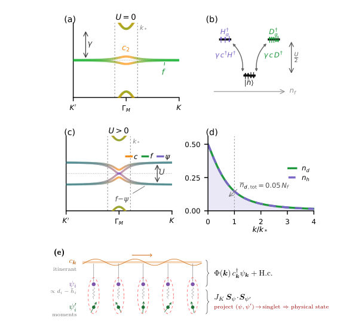
<figcaption class="paper-figure-caption"><b>Fig 1.</b> FIG. 1. (a) Free fermion bands at U = 0 along K′−ΓM −K, coloured by orbital content. γ inverts the active band: c2- like at ΓM, f-like in the regime |k| &gt; k∗. (b) Starting from a true Mott insulator of f orbital at a fixed valence nf i = ¯n, the γ hybridization generates a finite density of holon and doublon excitations. (c) The bands in the charge sector in the mixed-valence Mott state. At low energy, there is a quadratic band touching dominated by the orthogonal fermion ψ. (d) The momentum distribution of the doublon and holon nd(k) = nh(k) = 1 2  1 −k/ p</figcaption>
</figure>
<figure class="paper-figure-card">
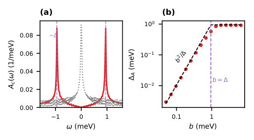
<figcaption class="paper-figure-caption"><b>Fig 2.</b> FIG. 3. (a) Momentum-integrated Ac(ω) inside the supercon- ducting phase, at the θ = 1.15◦, ν = 0, JA = 1 meV solution of Fig. 2(d) (b = 5.7 meV, ∆= 0.95 meV). The four point nodes of the | cos 2ϕ| gap (ϕ is the polar angle of k, measured from the nematic axis) give a V shape, with coherence peaks at ±∆. Dotted: the same spectral function Ac(ω) for the normal state with ∆= 0. (b) Antinodal gap ∆A versus b at fixed ∆= 0.95 meV (θ = 1.15◦, ν = 0), crossing over from the proximity form b2/∆(dashed) to the locked value ∆. In the regime b &lt; ∆, we expect a two-gap structure.</figcaption>
</figure>
<figure class="paper-figure-card">
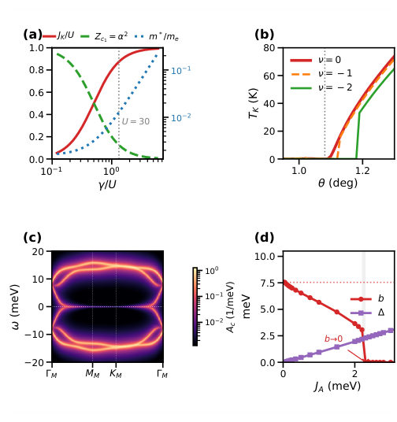
<figcaption class="paper-figure-caption"><b>Fig 3.</b> FIG. 2. (a) The γ/U crossover at θ = 1.15◦for the charge sector at ν = 0, with γ, M, v∗fixed at their THFM values and U varied. Red: JK/U = γ2/(γ2 + U 2/4). Green dashed: the c1 spectral weight Zc1 = α2. The two cross at γ = U/2. Blue dotted (right axis): the effective mass of the quadratic band touching, m∗= ℏ2|M|/(2α2v2 ∗) = ℏ2|M|</figcaption>
</figure>
<figure class="paper-figure-card">
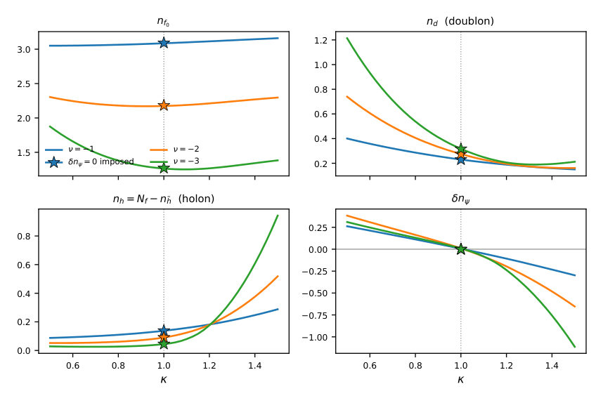
<figcaption class="paper-figure-caption"><b>Fig 4.</b> FIG. 4. Occupations versus κ near the magic angle (θ = 1.05◦: γ = 24.75 meV, |M| = 3.69 meV, U = 30 meV, temperature T = 0.02 meV) for ν = −1, −2, −3, computed from Eq. (A24) with nc = 4 + ν held fixed: nf0, the doublon and holon densities nd and nh = Nf −n˜h, and the mismatch δnψ. Stars mark the solution of Eq. (A25), which has no κ; near κ = 1 the two coincide within the linewidth. nd &gt; nh throughout: the valence stays mixed in both cases.</figcaption>
</figure>
<figure class="paper-figure-card">
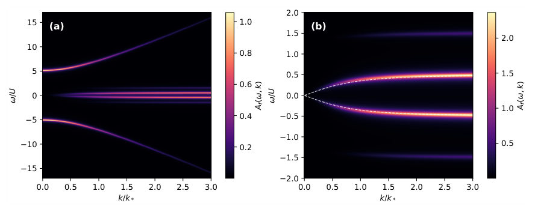
<figcaption class="paper-figure-caption"><b>Fig 5.</b> FIG. 5. f spectral function Af(ω, k) of the untruncated Gaussian theory Eq. (B11) at γ = 5U, M = 0, pairs l ∈{0, 1}. (a) Full window: the bright pair at ± p</figcaption>
</figure>
</div>

<p><strong>Summary.</strong> This work develops a comprehensive theoretical model to describe emergent heavy fermion physics and superconductivity near the Mott transition in twisted bilayer graphene. By treating the system through an emergent Kondo coupling mechanism involving mixed-valence excitations, the authors predict the formation of a heavy semimetal phase and unconventional superconducting domes at charge neutrality. This establishes a powerful, unified framework for correlated materials research.</p>
<p><strong>Why it may be interesting.</strong> The development of a unified framework connecting Mott transitions, heavy fermion behavior, and unconventional superconductivity in a tunable solid-state system like TBG is highly relevant for understanding strongly correlated electron physics beyond simple Hubbard models.</p>
<details>
<summary>Detailed structure</summary>
<p><strong>Main problem.</strong> The research investigates emergent heavy fermion behavior and superconductivity that arise near a Mott transition in twisted bilayer graphene (TBG).</p>
<p><strong>Main result.</strong> The authors establish a unified framework showing how mixed-valence physics leads to an emergent Kondo screening transition, resulting in a heavy semimetal phase and unconventional superconductivity.</p>
<p><strong>Method.</strong> The analysis employs an emergent heavy-fermion framework utilizing an 'ancilla' theory involving orthogonal fermions ($\psi$) to capture mixed-valence Mott states. Techniques include Schrieffer-Wolff elimination, mean-field theory for pairing, and self-consistent determination of excitation weights.</p>
<p><strong>Model / system.</strong> The system is Twisted Bilayer Graphene (TBG) modeled by an extended Hamiltonian involving itinerant carriers ($c$), local moments ($\psi'$), and charge excitations treated via doublon/holon operators. The physics is analyzed near integer fillings $
u$ relative to the Mott transition.</p>
<p><strong>Key observables.</strong> Quasiparticle residue ($Z$), Fermi velocity ($v_F$), superconducting gap structure ($\Delta_{SC}$), Kondo temperature ($T_K$), and momentum-resolved occupations of doublon/holon excitations.</p>
<p><strong>Important parameters / regimes.</strong> Hybridization coupling ($\gamma$) vs. on-site repulsion ($U$); twist angle ($    heta$); doping level ($
u$); and the anti-Hund's coupling ($J_A$).</p>
<p><strong>Assumptions / limitations.</strong> The theory relies on an emergent heavy-fermion description derived from mixed-valence physics, using approximations like canonical fermions in a mixed state ensemble.</p>
<p><strong>Figures summary.</strong> Figures illustrate band structure changes (band inversion), the generation of holon/doublon excitations, and plots showing $T_K$ dependence on the twist angle $ heta$.</p>
<p><strong>Paper structure.</strong> The paper progresses by defining the effective heavy-fermion model using ancilla fermions, deriving the Kondo coupling mechanism from mixed-valence physics, calculating the resulting low-energy semimetal state below $T_K$, and finally incorporating anti-Hund's coupling to predict superconductivity.</p>
</details>
<details>
<summary>Abstract</summary>
<p>Near a bandwidth-tuned Mott transition, the Fermi velocity $v_F$ and quasiparticle residue $Z$ of a metal often vanish. Here, we show that analogous phenomena emerge in twisted bilayer graphene (TBG) at integer fillings and can be captured by an emergent heavy-fermion framework within a projective active-band limit. Unlike models incorporating remote bands, our effective heavy-fermion description arises from \textit{mixed-valence Mott} physics via decoupled charge and local-moment sectors. In the charge sector, active bands $c(\mathbf{k})$ hybridize with an emergent \emph{orthogonal fermion} $ψ(\mathbf{k})$ to open a large Mott gap at $|\mathbf{k}| > k_*$ ($k_*$ sets the momentum-patch size) and a quadratic band-touching semimetal near $\mathbf{k}=0$ at neutrality ($ν=0$). The orthogonal fermion is a linear combination of the doublon and holon excitations and may be written as $ψ_i \sim (δn^f_i+\frac{1}{2})^{-1} f_i$. An emergent Kondo coupling $J_K \sim U$ ($U$ is the local Hubbard interaction) between $ψ$ and local moments $ψ'$ frames the Mott transition as a Kondo screening transition, tuned by the twist angle $θ$. Away from the magic angle, a Kondo-screened heavy semimetal develops below $T_K$ (the Kondo temperature) with vanishing $Z$. Introducing anti-Hund's coupling $J_A$ generates an s-wave fully gapped or nematic, nodally gapped superconducting dome near the Mott boundary even at $ν=0$. At other integer fillings $ν= \pm 1, \pm 2$, increasing bandwidth first drives the small-gap Mott state into an intermediate quadratic band-touching semimetal before entering a heavy Fermi liquid with large Fermi surfaces. Our results establish a unified framework for emergent heavy fermion physics with both itinerant carriers and local moments from the $f$ orbital.</p>
</details>
<p><sub><a href="#top">↑ back to top</a></sub></p>

<p><a id="paper-2608.12317"></a></p>
<h3 id="probing-impurity-quantum-criticality-with-entanglement-witnesses"><a href="http://arxiv.org/abs/2608.12317v1">Probing Impurity Quantum Criticality with Entanglement Witnesses</a></h3>
<p><strong>Authors:</strong> Mateo Cárdenes Wuttig, Andrew J. Millis<br>
<strong>Type:</strong> theory · <strong>Category:</strong> strongly correlated electrons · <strong>PDF:</strong> <a href="https://arxiv.org/pdf/2608.12317v1">https://arxiv.org/pdf/2608.12317v1</a><br>
<strong>Analysis basis:</strong> full PDF text, analyzed in chunks
<strong>Topic relevance:</strong> <code>analog quantum simulation</code> <strong>1/5</strong> · <code>quantum measurements</code> <strong>1/5</strong></p>
<div class="figure-strip-hint">↔ Scroll figures horizontally</div>
<div class="paper-figures-scroll">
<figure class="paper-figure-card">
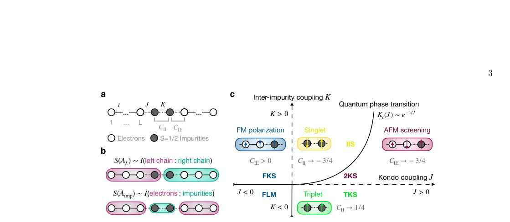
<figcaption class="paper-figure-caption"><b>Fig 1.</b> FIG. 1. Two-impurity Kondo model, entanglement partitions, and schematic phase diagram. a, Two spin- 1/2 impurities (gray sites) are coupled by an inter-impurity exchange K and connected through Kondo couplings J to independent half-filled chains of L non-interacting electrons (white sites) with nearest-neighbor hopping t. CII = ⟨S1 · S2⟩ and CIE = ⟨S · se⟩denote the impurity-impurity and impurity-electron correlators, respectively. b, Partitions used to probe ground-state entanglement, which is proportional to the mutual information I: Two single-impurity chains S(AL) (top) and impurities and electrons S(Aimp) (bottom). c, Schematic zero-temperature ground-state phase diagram as a function...</figcaption>
</figure>
<figure class="paper-figure-card">
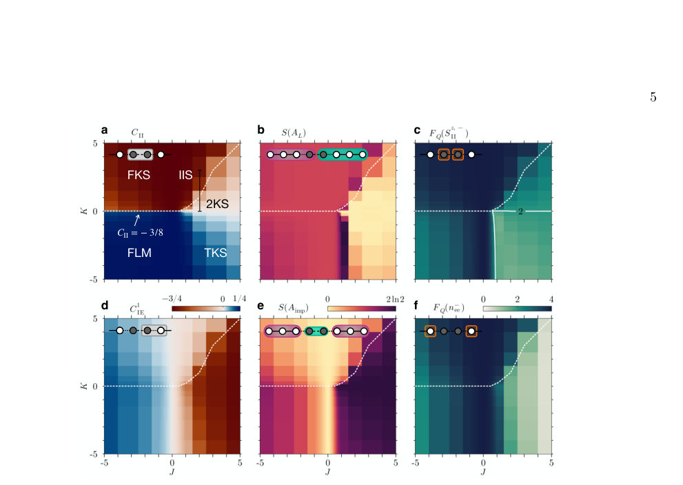
<figcaption class="paper-figure-caption"><b>Fig 2.</b> FIG. 2. Correlations, entanglement, and quantum Fisher information across the phase diagram. Zero temper- ature ground-state observables as a function of the electron–impurity Kondo coupling J (horizontal axis) and inter-impurity exchange K (vertical axis), obtained from DMRG. a, d, Spin-spin correlations. The impurity–impurity correlator CII (a) distinguishes predominantly singlet-correlated (red) and triplet-correlated (blue) impurities. In all panels, the dotted white contour marks CII = −3/8 and provides a reference scale for the competition between singlet formation and Kondo screening in the quadrant J, K &gt; 0. The black line corresponds to the linecut presented in Fig. 3. The...</figcaption>
</figure>
<figure class="paper-figure-card">
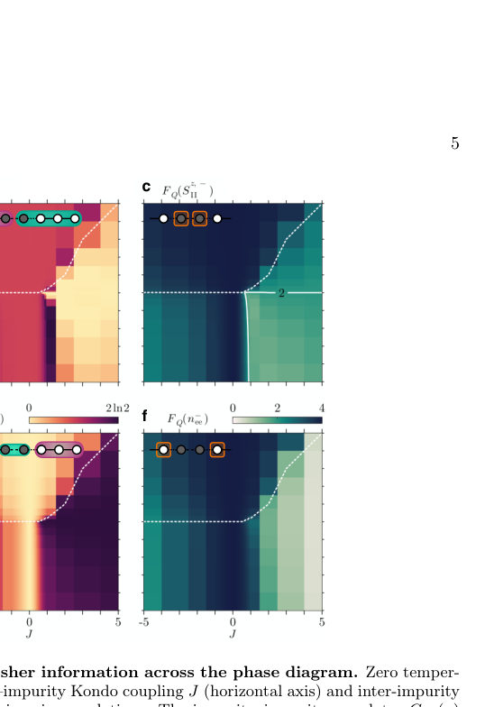
<figcaption class="paper-figure-caption"><b>Fig 3.</b> Fig. 3d shows that ∂KFQ(n− ee) develops a pronounced peak near the same finite-size critical coupling Kc(L). Its critical enhancement reveals that the redistribution of entanglement is imprinted on spatially resolved occu- pation fluctuations of the conduction electrons, provid- ing an experimentally motivated route to detect impu- rity quantum criticality without direct measurement of the inter-impurity spin correlation. The spin-resolved QFI FQ(n− ↑,ee) (inset of Fig. 3d) follows the critical re- sponse and also verifies entanglement[12].</figcaption>
</figure>
<figure class="paper-figure-card">
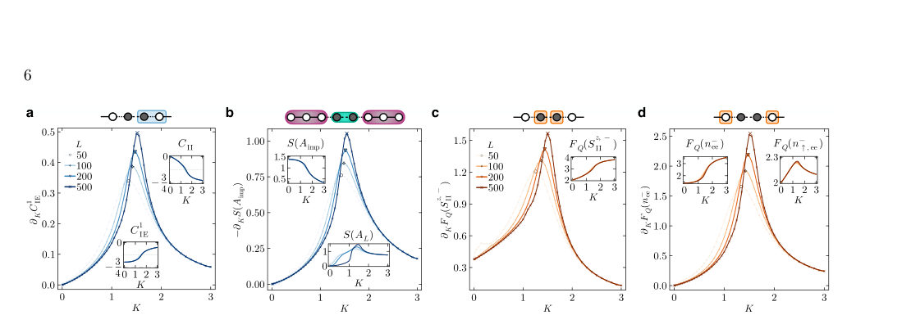
<figcaption class="paper-figure-caption"><b>Fig 4.</b> FIG. 3. Quantum Fisher information reveals entanglement redistribution at the critical point. Derivatives with respect to the inter-impurity exchange K for J = 2 and different electron chain lengths L. a, The derivative of the impurity–electron correlator, ∂KC1 IE, develops a peak near the size-dependent critical coupling Kc(L), visualized by large symbols. The insets show C1 IE and the impurity–impurity correlator CII. b, The derivative of the entropy between electrons and impurities, −∂KS(Aimp), provides an entanglement signature of the critical point. The insets show S(Aimp) and S(AL), demonstrating how entanglement is redistributed across the phase transition. c, The derivative of the...</figcaption>
</figure>
<figure class="paper-figure-card">
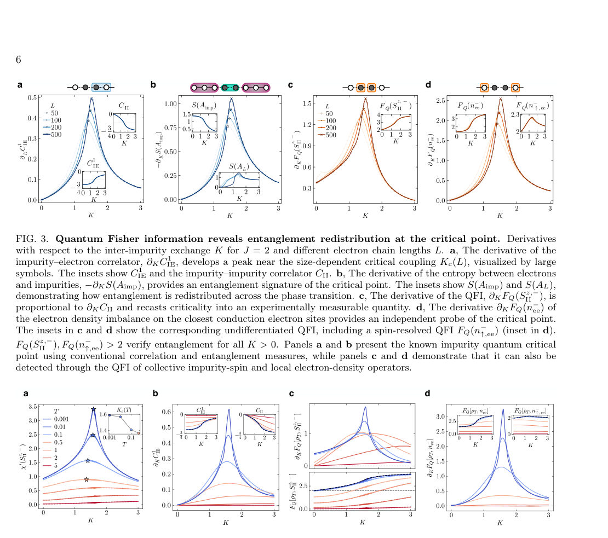
<figcaption class="paper-figure-caption"><b>Fig 5.</b> FIG. 4. Impurity criticality and QFI at finite temperatures. a, Static susceptibility χ′(Sz,− II ) of the staggered impurity spin operator as a function of K for J = 2 for different temperatures T. All data are obtained from NRG. The low-temperature peak at T = 0.001 identifies Kc = 1.59 ± 0.03 and is suppressed into a broader crossover with increasing temperature. b, Derivative of the impurity–electron correlator ∂KC1 IE, whose extrema track the susceptibility peak. Insets show the corresponding finite-temperature correlators, where T = 0 DMRG data (dashed black lines) of the undifferentiated observables show that both methods agree in the limit T →0. c,d, QFI of the impurity generator...</figcaption>
</figure>
</div>

<p><strong>Summary.</strong> The paper investigates quantum criticality in the two-impurity Kondo model by using entanglement measures as witnesses. By calculating observables like Quantum Fisher Information and various correlation functions across different coupling regimes, the authors demonstrate that these measurable quantities exhibit singular behavior precisely at the predicted quantum critical point. This establishes a robust theoretical framework for detecting exotic quantum phases in solid-state systems.</p>
<p><strong>Why it may be interesting.</strong> This work directly connects abstract quantum information concepts (entanglement) to concrete, measurable physical quantities (susceptibilities, fluctuations), providing a powerful diagnostic tool for strongly correlated materials like heavy fermions.</p>
<details>
<summary>Detailed structure</summary>
<p><strong>Main problem.</strong> The study aims to determine if measurable spin and charge fluctuations can serve as entanglement witnesses to detect quantum critical points (QCPs) in impurity systems.</p>
<p><strong>Main result.</strong> The analysis confirms that the Quantum Fisher Information (QFI), derived from measurable correlations, tracks the entanglement changes across the non-Fermi-liquid QCP separating Kondo-screened and inter-impurity singlet phases.</p>
<p><strong>Method.</strong> The authors employ advanced numerical techniques like Density-Matrix Renormalization Group (DMRG) and Numerical Renormalization Group (NRG) to calculate entanglement measures and QFI at zero and finite temperatures.</p>
<p><strong>Model / system.</strong> The primary model is the two-impurity Kondo model, consisting of two spin-1/2 impurities coupled by an exchange interaction ($K$) and each coupled independently to a bath of conduction electrons via Kondo couplings ($J$).</p>
<p><strong>Key observables.</strong> Entanglement entropy ($S(A_{	ext{imp}})$), impurity-impurity correlator ($\langle \mathbf{S}_1 \cdot \mathbf{S}_2 
angle$), Quantum Fisher Information (QFI) for spin and charge operators.</p>
<p><strong>Important parameters / regimes.</strong> The critical coupling $K_c(J)$ controls the transition between the Kondo-screened Fermi-liquid state and the inter-impurity singlet phase; temperature ($T$) is also varied.</p>
<p><strong>Assumptions / limitations.</strong> The analysis relies on mapping entanglement properties onto experimentally accessible dynamical response functions via QFI calculations.</p>
<p><strong>Figures summary.</strong> Figures schematically illustrate the model setup, showing how various observables like correlators and entanglement measures change across different quantum phases (e.g., 2KS vs IIS).</p>
<p><strong>Paper structure.</strong> The paper systematically analyzes the Hamiltonian in different coupling regimes ($J$ vs $K$), calculates ground-state and finite-temperature expectation values using DMRG/NRG, and then maps these results onto entanglement measures and QFI to pinpoint the critical point.</p>
</details>
<details>
<summary>Abstract</summary>
<p>Entanglement is a defining feature of quantum mechanics, and its relation to quantum criticality is of considerable current interest. Here we show that measurable spin and charge fluctuations provide an entanglement witness of quantum criticality in the two-impurity Kondo model, which has experimental realizations in terms of coupled quantum dots and magnetic impurities added to surfaces. We use density-matrix renormalization group and numerical renormalization group calculations to resolve the non-Fermi-liquid critical point separating two independently Kondo-screened impurities from an inter-impurity singlet and interpret it as a change in the dominant entanglement partner of each local moment: from entanglement of the local moment with an extended set of conduction-electron degrees of freedom to entanglement with the other impurity. This reorganization is accompanied by a singular response of the impurity-bath entanglement and the inter-impurity susceptibility. We show how the same structure is encoded in the quantum Fisher information of collective spin and charge operators at zero and finite temperatures, connecting the entanglement picture to experimentally accessible dynamical response functions. Our results establish impurity systems as controlled settings in which quantum-critical entanglement can be detected through measurable correlations, and provide further insight into the possibility of understanding heavy-fermion physics in terms of entanglement.</p>
</details>
<p><sub><a href="#top">↑ back to top</a></sub></p>

<p><a id="paper-2608.11302"></a></p>
<h3 id="the-fate-of-crystalline-topological-phenomena-in-the-continuum"><a href="http://arxiv.org/abs/2608.11302v1">The Fate of Crystalline Topological Phenomena in the Continuum</a></h3>
<p><strong>Authors:</strong> Rajas Chari, Taylor L. Hughes<br>
<strong>Type:</strong> theory · <strong>Category:</strong> strongly correlated electrons · <strong>PDF:</strong> <a href="https://arxiv.org/pdf/2608.11302v1">https://arxiv.org/pdf/2608.11302v1</a><br>
<strong>Analysis basis:</strong> full PDF text, analyzed in chunks
<strong>Topic relevance:</strong> <code>analog quantum simulation</code> <strong>1/5</strong> · <code>driven-dissipative phase transition</code> <strong>1/5</strong></p>
<div class="figure-strip-hint">↔ Scroll figures horizontally</div>
<div class="paper-figures-scroll">
<figure class="paper-figure-card">
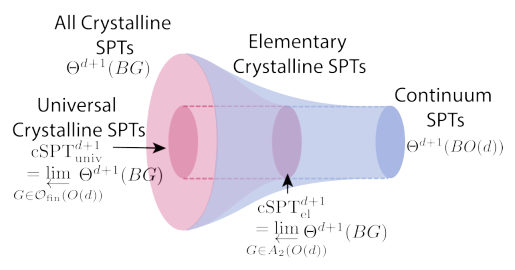
<figcaption class="paper-figure-caption"><b>Fig 1.</b> FIG. 1. Schematic “funnel” for the stratification theorem. The clas- sification of crystalline SPTs across all finite symmetry groups (left) maps surjectively onto the continuum classification (right) via the stratification map.</figcaption>
</figure>
<figure class="paper-figure-card">
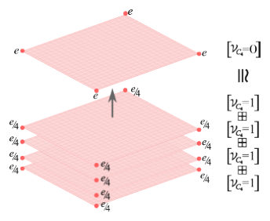
<figcaption class="paper-figure-caption"><b>Fig 2.</b> FIG. 2. A single C4-symmetric HOTI layer carries fractional corner charge qcorner = e/4 (mod e) with indicator νC4 = 1 ∈Z4, and is denoted by [νC4 = 1]. Stacking four layers adds the corner charges to an integer e, yielding a trivial insulator. This realizes [νC4 = 1]⊞4 = 0, i.e., a p = 2 torsion class with exponent k = 2 with νC4 = 0.</figcaption>
</figure>
<figure class="paper-figure-card">
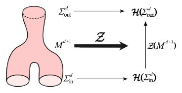
<figcaption class="paper-figure-caption"><b>Fig 3.</b> FIG. 3. Pictorial description of a TQFT functor.</figcaption>
</figure>
<figure class="paper-figure-card">
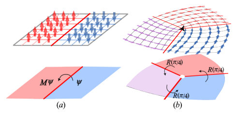
<figcaption class="paper-figure-caption"><b>Fig 4.</b> FIG. 4. (a) Codimension-1 domain walls for orientation-reversing mirror symmetry M. (b) Codimension-2 disclinations defect of dis- crete rotation symmetry G = C4. Non-trivial holonomy around a loop encircling the disclination implies it is a source of curvature. Bottom panels encode the physical defect configurations using trian- gulations with edges labelled with group elements.</figcaption>
</figure>
<figure class="paper-figure-card">
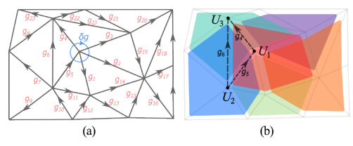
<figcaption class="paper-figure-caption"><b>Fig 5.</b> FIG. 5. (a) A patch of a triangulated manifold with locally oriented edges labeled by group elements ge ∈G. Consistency requires that the ordered product of labels along any contractible loop in the 1- skeleton equals the identity. (b) Illustrates the dual cellulation of the triangulation. The same consistency condition applied to every face (2-simplex above) leads to the ˇCech cocycle condition on the topology defined by open covers {Uα} given by polytopes in the dual lattice(or cellulation). For example, in the highlighted example we get g5 · g4 = g6.</figcaption>
</figure>
</div>

<p><strong>Summary.</strong> The paper rigorously analyzes the passage from crystalline topological phases on a lattice to their corresponding continuum field theories. Using advanced algebraic topology, it proves that while every continuum phase can be realized on a lattice, the process loses information, meaning distinct lattice configurations can map to the same continuous description.</p>
<p><strong>Why it may be interesting.</strong> This work provides a rigorous mathematical framework for understanding how microscopic symmetries and lattice details constrain macroscopic continuum descriptions in topological materials, which is crucial for designing novel quantum states.</p>
<details>
<summary>Detailed structure</summary>
<p><strong>Main problem.</strong> The central problem is rigorously determining whether the topological properties of gapped bosonic systems defined on a discrete lattice (crystalline phases) survive when taking the continuum limit to form a field theory.</p>
<p><strong>Main result.</strong> The map from crystalline to continuum topological phases is surjective, meaning every continuum phase has a lattice realization; however, it is generally not injective, implying that some microscopic lattice information collapses in the continuum description.</p>
<p><strong>Method.</strong> The authors employ advanced mathematical tools, including algebraic topology and category theory, to construct a rigorous stratification map relating crystalline classification groups ($\Theta^{d+1}(BG)$) to continuum ones ($\Theta^{d+1}(	ext{BO}(d))$).</p>
<p><strong>Model / system.</strong> The study focuses on gapped bosonic phases of matter characterized by finite point-group symmetries ($G \subset O(d)$), analyzing the relationship between lattice topological invariants and their effective low-energy continuum field theories.</p>
<p><strong>Key observables.</strong> Topological invariants, such as those classified by group cohomology ($\Theta^{d+1}(BG)$) and cobordism theory ($\Omega_{d+1}^O(BG)$).</p>
<p><strong>Important parameters / regimes.</strong> The analysis is restricted to point-group symmetries ($G \subset O(d)$), deliberately excluding lattice translations, and focuses specifically on the 2-primary torsion sector of the classification groups.</p>
<p><strong>Assumptions / limitations.</strong> The work assumes gapped phases and restricts attention to bosonic systems whose continuum limit TQFTs are assumed to be diffeomorphism-invariant (excluding certain metric dependencies).</p>
<p><strong>Figures summary.</strong> Figure 1 schematically illustrates a surjective 'funnel' mapping the classification of crystalline SPTs onto the continuum SPT classification.</p>
<p><strong>Paper structure.</strong> The paper develops the mathematical framework by defining the map between lattice and continuum classifications, proving its surjectivity, analyzing the loss of information (non-injectivity), and applying this general theory to specific physical examples like 2D rotation-symmetric phases and quantum critical points.</p>
</details>
<details>
<summary>Abstract</summary>
<p>The continuum limit is a widely used theoretical construct for obtaining continuum field-theories of crystalline systems. We study the formulation of a continuum limit for gapped bosonic phases and ask whether their topological properties survive passage to the continuum. Using methods in algebraic topology and category theory, we give a rigorous formulation of the continuum limit and construct a surjective global map relating crystalline topological phases across all finite point-group symmetries to continuum invertible topological phases. Consequently, we find that some lattice phases admit no continuum limit, while distinct lattice phases that do admit a continuum limit can share the same continuum image, hence implying that some lattice topological data can collapse. Conversely, we find that every continuum invertible phase admits a faithful crystalline realization. In addition to the general framework, we apply it to several examples, including studies of a 2D rotation-symmetric phase, higher-order topological phases, and the mixed spin-lattice anomaly of the deconfined quantum critical point between an antiferromagnet and valence bond solid.</p>
</details>
<p><sub><a href="#top">↑ back to top</a></sub></p>

<p><a id="paper-2608.11993"></a></p>
<h3 id="contextuality-in-the-math666math-qubit-pauli-group"><a href="http://arxiv.org/abs/2608.11993v1">Contextuality in the $n$-qubit Pauli group</a></h3>
<p><strong>Authors:</strong> Markus Frembs<br>
<strong>Type:</strong> theory · <strong>Category:</strong> quantum information and computing · <strong>PDF:</strong> <a href="https://arxiv.org/pdf/2608.11993v1">https://arxiv.org/pdf/2608.11993v1</a><br>
<strong>Analysis basis:</strong> full PDF text, analyzed in chunks
<strong>Topic relevance:</strong> <code>quantum measurements</code> <strong>1/5</strong></p>
<div class="figure-strip-hint">↔ Scroll figures horizontally</div>
<div class="paper-figures-scroll">
<figure class="paper-figure-card">
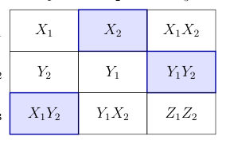
<figcaption class="paper-figure-caption"><b>Fig 1.</b> FIG. 1: The highlighted mutually anti-commuting Pauli operators determine the rank-2 projectors ΠP = 1</figcaption>
</figure>
</div>

<p><strong>Summary.</strong> The paper rigorously investigates contextuality within the $n$-qubit Pauli group by introducing a generalized notion of noncontextual property. It proves that for three or more qubits, this system is highly contextual, linking its structure to the geometry of symplectic polar spaces. This provides deep mathematical insight into the fundamental resource of quantum information.</p>
<p><strong>Why it may be interesting.</strong> This work provides a deep mathematical characterization of quantum contextuality in a fundamental model ($   ext{Pauli}_n$), linking it rigorously to advanced topics in algebraic geometry (symplectic polar spaces) and combinatorial set theory (Cameron-Liebler sets).</p>
<details>
<summary>Detailed structure</summary>
<p><strong>Main problem.</strong> The paper analyzes contextuality within the $n$-qubit Pauli group, generalizing the concept of noncontextuality beyond simple valuations using Boolean-valued frame functions.</p>
<p><strong>Main result.</strong> It establishes that for $n \geq 3$, the Pauli group admits no nontrivial noncontextual properties; furthermore, it shows that contextuality depends on the geometry of symplectic polar spaces rather than just the projective nature of the representation.</p>
<p><strong>Method.</strong> The analysis employs advanced mathematical tools including defining context posets, introducing 'noncontextual properties' via connection holonomy groups, and relating these to Boolean-valued frame functions and Cameron–Liebler sets.</p>
<p><strong>Model / system.</strong> The primary system is the $n$-qubit Pauli group ($  ilde{P}_n$), which is analyzed through its underlying symplectic theory. The contextuality is mapped onto geometric structures like isotropic subspaces and polar spaces in a binary affine-symplectic space.</p>
<p><strong>Key observables.</strong> Contextuality, noncontextual properties (diagnosed by the holonomy group $ ext{Hol}_{C_0}(
abla)$), Boolean-valued frame functions, and the weight $k$ of these functions.</p>
<p><strong>Important parameters / regimes.</strong> $n$ (number of qubits); the structure of the symplectic form $\omega$; and specific weights $\{0, 1, 2, 2n-2, 2n-1, 2n\}$ for frame function analysis.</p>
<p><strong>Assumptions / limitations.</strong> The generalization of KS noncontextuality via Definition 3 (noncontextual property) is central; the analysis also relies on relating these properties to Lagrangian subspaces and Cameron–Liebler sets.</p>
<p><strong>Figures summary.</strong> Figure 1 illustrates mutually anti-commuting Pauli operators determining rank-2 projectors. Table I summarizes the existence of frame functions for different $n$ and theories, while Table II compares four distinct context posets associated with the system.</p>
<p><strong>Paper structure.</strong> The paper progresses by defining generalized noncontextuality (Definition 3), establishing its equivalence to Boolean-valued frame functions (Theorem 1), analyzing specific cases ($n=2$), comparing the Pauli group context poset to the symplectic theory, and finally relating these results to the classification of Cameron–Liebler sets.</p>
</details>
<details>
<summary>Abstract</summary>
<p>The $n$-qubit Pauli group is an essential ingredient to most quantum applications, from computing and error correction to benchmarking and simulation. Despite comprising merely a discrete set of operators, it exhibits many quintessential features of quantum theory, including contextuality, which has been identified as a key resource to quantum advantage in a variety of different flavours. Here, we extend this analysis, introducing the notion of a `noncontextual property' whose nonexistence proves the Kochen-Specker theorem, similarly to and generalising common arguments based on the nonexistence of valuations. We relate this notion formally to the existence of Boolean-valued frame functions, and characterise all such frame functions in the case of the $n$-qubit Pauli group.   For two qubits, we show that the Pauli group admits noncontextual properties, despite admitting no valuations. We then establish this as the only nontrivial such case with $n\geq 2$, by proving that any Boolean-valued frame function on stabiliser states is constant for more than two qubits. We also perform a similar analysis for the symplectic theory underlying the $n$-qubit Pauli group, for which nonconstant Boolean-valued frame functions exist for all $n$, yet only in restricted form. By comparison, this shows that contextuality in the $n$-qubit Pauli group is not only a consequence of the projective nature of the Pauli group as a representation of its underlying symplectic vector space, but of the geometry of symplectic polar spaces itself. In geometric terms, our result determines all Cameron-Liebler sets of maximal totally isotropic flats in the binary affine-symplectic space.</p>
</details>
<p><sub><a href="#top">↑ back to top</a></sub></p>

<p><a id="paper-2608.11884"></a></p>
<h3 id="coqui-a-coordinate-conditioned-quantum-implicit-generative-adversarial-network-for-end-to-end-image-generation"><a href="http://arxiv.org/abs/2608.11884v1">CoQui: A Coordinate-Conditioned Quantum Implicit Generative Adversarial Network for End-to-End Image Generation</a></h3>
<p><strong>Authors:</strong> Xue Yang, Rigui Zhou, ShiZheng Jia, Dax Enshan Koh, Siong Thye Goh, Young-Wook Cho, YaoChong Li, Xuezhi Ma, Hongyu Chen, Xin Wang<br>
<strong>Type:</strong> both · <strong>Category:</strong> quantum information and computing · <strong>PDF:</strong> <a href="https://arxiv.org/pdf/2608.11884v1">https://arxiv.org/pdf/2608.11884v1</a><br>
<strong>Analysis basis:</strong> full PDF text, analyzed in chunks
<strong>Topic relevance:</strong> <code>quantum measurements</code> <strong>1/5</strong></p>
<div class="figure-strip-hint">↔ Scroll figures horizontally</div>
<div class="paper-figures-scroll">
<figure class="paper-figure-card">
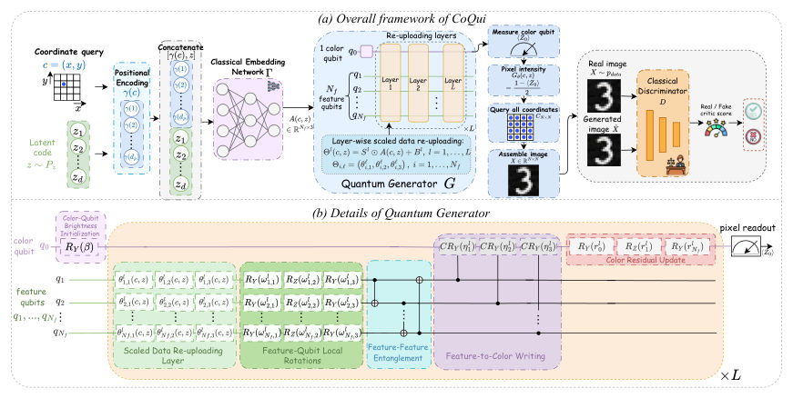
<figcaption class="paper-figure-caption"><b>Fig 1.</b> Figure 1: Overview of the CoQui framework. (a) Overall architecture: Given a spatial coordinate c = (x, y) and a latent code z, CoQui utilizes a classical embedding network Γ to generate coordinate- and latent-conditioned parameters A(c, z) ∈RNf ×3. These are transformed into layer-wise scaled parameters Θi,ℓfor the quantum generator G. The pixel intensity is computed as G(c, z) = 1−⟨Z0⟩</figcaption>
</figure>
<figure class="paper-figure-card">
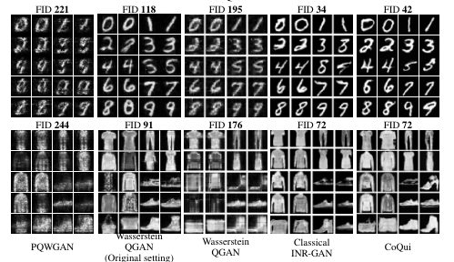
<figcaption class="paper-figure-caption"><b>Fig 2.</b> Figure 2: Qualitative comparison on MNIST and Fashion-MNIST. Top: samples from each class for each method. Bottom: represen- tative grids over ten classes, with FID scores reported above each grid.</figcaption>
</figure>
<figure class="paper-figure-card">
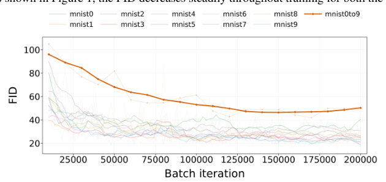
<figcaption class="paper-figure-caption"><b>Fig 3.</b> Figure 1: Training FID curves of the jointly trained MNIST 0–9 model and the individual digit-specific models. the jointly trained multi-class model, and gradually stabilizes in the later stages. This indicates that the proposed model is able to progressively learn the target data distribution and achieve stable convergence under both single-class and multi-class settings.</figcaption>
</figure>
</div>

<p><strong>Summary.</strong> CoQui introduces a novel Quantum Generative Adversarial Network that models image generation using coordinate-conditioned implicit functions, overcoming the qubit scaling issues of traditional QGANs. By reading out pixel intensities via expectation values at specific coordinates rather than encoding them into circuit amplitudes, it achieves superior performance on benchmark datasets while maintaining structural control over the generated image.</p>
<p><strong>Why it may be interesting.</strong> This work is highly relevant as it pushes QGANs beyond simple amplitude encoding by adopting an implicit function representation conditioned on continuous spatial coordinates. This structural change addresses fundamental scaling bottlenecks in quantum machine learning for imaging tasks.</p>
<details>
<summary>Detailed structure</summary>
<p><strong>Main problem.</strong> The authors address limitations in existing Quantum Generative Adversarial Networks (QGANs) for image generation, specifically the scaling issues with resolution and the probability competition when decoding multiple pixels.</p>
<p><strong>Main result.</strong> CoQui outperforms established amplitude-mapping QGAN baselines (like FRQI-based methods) in both visual quality and quantitative metrics while requiring fewer qubits. The method successfully decouples image resolution from address qubit requirements.</p>
<p><strong>Method.</strong> The core methodology reformulates image generation as coordinate-conditioned implicit function learning, where pixel intensities are read out by evaluating a variational quantum circuit at specific spatial coordinates $(c)$ conditioned on latent variables $(z)$.</p>
<p><strong>Model / system.</strong> The model is CoQui, a QGAN framework built upon Quantum Implicit Neural Representations (QINR). It uses a classical embedding network to generate parameters for a parameterized quantum circuit that maps continuous spatial coordinates and latent codes to pixel intensities via expectation values.</p>
<p><strong>Key observables.</strong> Pixel intensity derived from the expectation value of a dedicated color qubit ($\langle Z_0 
angle$), evaluated across all spatial coordinates $(c)$. Quantitative metrics include FID, JSD, Entropy, Brightness, and Sobel distance.</p>
<p><strong>Important parameters / regimes.</strong> The model's structure involves trainable parameters governing circuit layers (e.g., scale $S_l$, bias $B_l$) and the number of feature qubits ($N_f$), which are optimized during training.</p>
<p><strong>Assumptions / limitations.</strong> The primary assumption is that image generation can be accurately modeled as a continuous, coordinate-conditioned implicit function learned via quantum circuits. Limitations include reliance on classical simulation and neglecting realistic hardware noise.</p>
<p><strong>Figures summary.</strong> Figures illustrate the overall CoQui framework (input $
ightarrow$ embedding $
ightarrow$ VQC $
ightarrow$ readout) and show representative MNIST samples comparing Full CoQui against variants lacking key structural components, demonstrating performance gains.</p>
<p><strong>Paper structure.</strong> The paper first identifies limitations in existing QGANs. It then proposes the CoQui architecture, detailing its coordinate-conditioned implicit mapping approach. The methodology involves defining the classical embedding network and the complex structure of the variational quantum circuit (including color qubit initialization, data re-uploading layers, entanglement, and residual updates). Finally, it presents quantitative ablation studies and capacity analyses.</p>
</details>
<details>
<summary>Abstract</summary>
<p>Quantum generative adversarial networks (QGANs) have attracted increasing attention for image generation using parameterized quantum circuits. Existing amplitude-based approaches face two key limitations: pixel locations are typically encoded by computational-basis indices or address qubits, causing quantum resources to grow with image resolution; meanwhile, jointly decoding many pixels from normalized quantum states introduces probability competition among pixels and limits precise pixel-wise control. To address these issues, we reformulate quantum image generation as coordinate-conditioned implicit function learning. Our method takes spatial coordinates and latent variables as inputs, uses a classical embedding network to generate input-dependent circuit parameters, and evaluates a variational quantum circuit at each coordinate. Pixel intensities are directly obtained from the expectation value of a dedicated color qubit, and a complete image is generated by querying all spatial coordinates. This design decouples image resolution from address-qubit requirements and avoids shared probability-normalization constraints across pixels. We further design a specialized variational quantum circuit to provide structural inductive bias for coordinate-conditioned generation. Simulated experiments on two benchmark datasets show that our method outperforms FRQI-based generation and PQWGAN in visual and quantitative quality while using fewer qubits, and also achieves better generation quality than the corresponding classical baseline.</p>
</details>
<p><sub><a href="#top">↑ back to top</a></sub></p>

<p><a id="paper-2608.12248"></a></p>
<h3 id="isospectral-majorization-and-isoperimetric-inequalities-for-coherent-states-on-the-bloch-sphere"><a href="http://arxiv.org/abs/2608.12248v1">Isospectral majorization and isoperimetric inequalities for coherent states on the Bloch sphere</a></h3>
<p><strong>Authors:</strong> Luis Daniel Abreu<br>
<strong>Type:</strong> theory · <strong>Category:</strong> other · <strong>PDF:</strong> <a href="https://arxiv.org/pdf/2608.12248v1">https://arxiv.org/pdf/2608.12248v1</a><br>
<strong>Analysis basis:</strong> full PDF text, analyzed in chunks
<strong>Topic relevance:</strong> <code>quantum measurements</code> <strong>1/5</strong></p>
<div class="figure-strip-hint">↔ Scroll figures horizontally</div>
<div class="paper-figures-scroll">
<figure class="paper-figure-card">
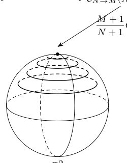
<figcaption class="paper-figure-caption"><b>Fig 1.</b> Figure 1. Geometric representation of the spherical amplification channel. Amplification raises the representation degree from PN to PM, while the natural normalization preserves the covariant symbol and its level curves on the Bloch sphere: QXM(X) = QX.</figcaption>
</figure>
</div>

<p><strong>Summary.</strong> This theoretical paper develops a fixed-spectrum majorization theory for coherent states on the Bloch sphere. By proving an isospectral version of the Lieb-Solovej inequality, it shows that passive rearrangement minimizes entropy. This spectral result is then applied to derive sharp isoperimetric inequalities for Toeplitz operators associated with measurable subsets of the sphere.</p>
<p><strong>Why it may be interesting.</strong> This work connects fundamental concepts from quantum information geometry (coherent states, entropy) with classical geometric inequalities (isoperimetry), providing powerful tools applicable to characterizing optimal state preparations or spatial distributions in quantum systems.</p>
<details>
<summary>Detailed structure</summary>
<p><strong>Main problem.</strong> The paper establishes isospectral majorization relationships and derives sharp isoperimetric inequalities for coherent states defined on the Bloch sphere.</p>
<p><strong>Main result.</strong> It proves a fixed-spectrum Lieb-Solovej inequality, showing that passive rearrangement minimizes certain entropy measures, which in turn yields isoperimetric bounds for Toeplitz operators related to spherical caps.</p>
<p><strong>Method.</strong> The analysis uses functional inequalities (convex/concave functions $\Phi$) applied to the Husimi function and leverages majorization theory ($\prec$) derived from spectral properties of Toeplitz operators.</p>
<p><strong>Model / system.</strong> The system is based on density operators $
ho$ acting on the Hilbert space of analytic polynomials $P_N$, which models coherent states on the Bloch sphere ($    ext{SU}(2)$). The analysis involves Toeplitz operators $T_\Omega$ defined by subsets $\Omega$ of the sphere.</p>
<p><strong>Key observables.</strong> Husimi function ($Q_
ho(z)$), Wehrl entropy ($S_W(
ho)$), and partial sums of eigenvalues ($\sum \lambda_j(\Omega)$) of Toeplitz operators.</p>
<p><strong>Important parameters / regimes.</strong> The polynomial degree $N$, the rank of the density operator $   ext{Rank}(
ho)=r$, and the measure/area $m(\Omega)$ of the subset $\Omega$.</p>
<p><strong>Assumptions / limitations.</strong> The results are derived for fixed spectra, extending previous rank-1 results. The extension to general convex functions relies on approximating them with piecewise linear functions.</p>
<p><strong>Paper structure.</strong> The paper builds from the Lieb-Solovej inequality (comparing $
ho$ to its passive rearrangement $
ho_{\downarrow}$) to establish entropy minimization, culminating in the application of this spectral theory to derive sharp isoperimetric inequalities for Toeplitz operators on the sphere.</p>
</details>
<details>
<summary>Abstract</summary>
<p>Let $\mathcal{P}_{N}$ be the $(N+1)$-dimensional Hilbert space of analytic polynomials of degree at most $N$. This is the natural environment to define $SU(2)$ (Bloch) coherent states. Let $Q_{ρ}$ be the Husimi function of a density operator $ρ$ on $% \mathcal{P}_{N}$. We prove an isospectral version of Lieb-Solovej inequality: if $ρ^{\downarrow }$ is obtained by placing the eigenvalues of $ρ$ in decreasing order along the monomial basis, then \begin{equation<em>} \int_{\mathbb{C}}Φ(Q_{ρ}(z))\,dm(z)\leq \int_{\mathbb{C}}Φ(Q_{ρ^{\downarrow }}(z))\,dm(z) \end{equation</em>}% for every convex function $Φ$ on $[0,1]$. Applying the corresponding reversed inequality to the concave function $Φ(t)=-t\log t$ gives the Wehrl entropy. In the process it is show that the output state of $ρ$ under Lieb-Solovej's channel is majorized by the output of the state $ρ^{\downarrow }$.   As an application, among all measurable subsets of the sphere having a fixed area, spherical caps maximize every partial sum of the eigenvalues of Toeplitz operators with symbol $1_Ω$. Equivalently, caps maximize all Ky Fan norms, leading to the sharp inequalities, previously known for $r=1$: \begin{equation<em>} \sum_{j=1}^{r}λ_{j}(Ω) \leq r-\sum_{k=0}^{r-1}(r-k)\binom{N+1}{k} m(Ω)^{k}\bigl(1-m(Ω)\bigr)^{N+1-k}. \end{equation</em>} This implies isoperimetric inequalities for all Schatten sums of $T_Ω$, obtained without using the spherical isoperimetric inequality.</p>
</details>
<p><sub><a href="#top">↑ back to top</a></sub></p>

<p><a id="paper-2608.11992"></a></p>
<h3 id="perfect-state-transfer-on-oriented-circulant-graphs-a-complete-classification"><a href="http://arxiv.org/abs/2608.11992v1">Perfect State Transfer on Oriented Circulant Graphs: A Complete Classification</a></h3>
<p><strong>Authors:</strong> Xingkun Song<br>
<strong>Type:</strong> theory · <strong>Category:</strong> quantum information and computing · <strong>PDF:</strong> <a href="https://arxiv.org/pdf/2608.11992v1">https://arxiv.org/pdf/2608.11992v1</a><br>
<strong>Analysis basis:</strong> full PDF text, analyzed in chunks
<strong>Topic relevance:</strong> <code>analog quantum simulation</code> <strong>1/5</strong></p>
<div class="figure-strip-hint">↔ Scroll figures horizontally</div>
<div class="paper-figures-scroll">
<figure class="paper-figure-card">
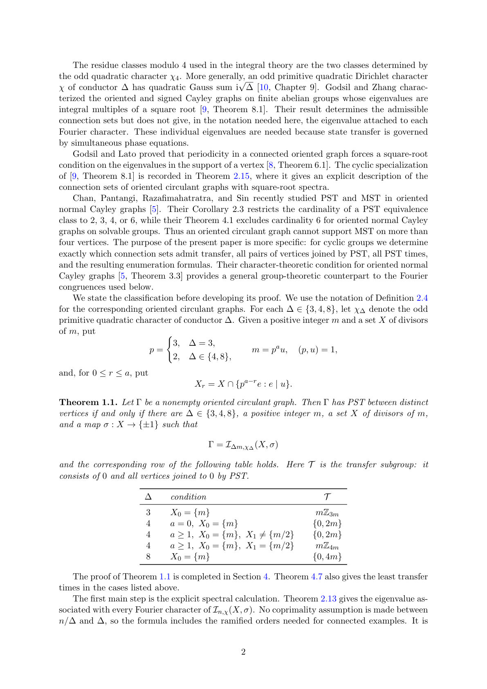
<figcaption class="paper-figure-caption"><b>Fig 1.</b> Low-resolution page preview, page 2</figcaption>
</figure>
<figure class="paper-figure-card">
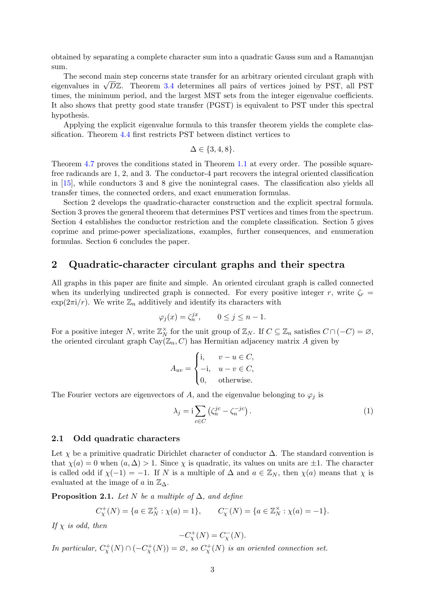
<figcaption class="paper-figure-caption"><b>Fig 2.</b> Low-resolution page preview, page 3</figcaption>
</figure>
<figure class="paper-figure-card">
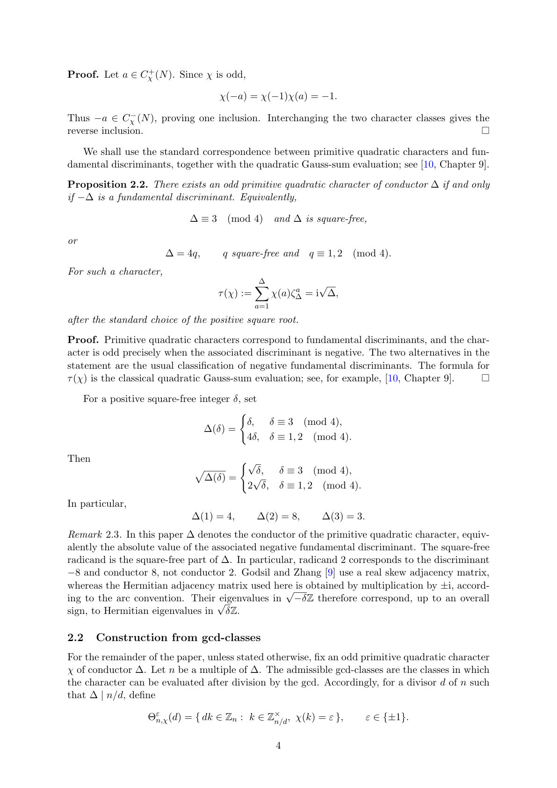
<figcaption class="paper-figure-caption"><b>Fig 3.</b> Low-resolution page preview, page 4</figcaption>
</figure>
<figure class="paper-figure-card">
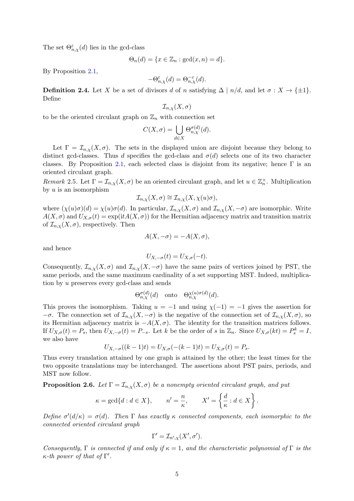
<figcaption class="paper-figure-caption"><b>Fig 4.</b> Low-resolution page preview, page 5</figcaption>
</figure>
<figure class="paper-figure-card">
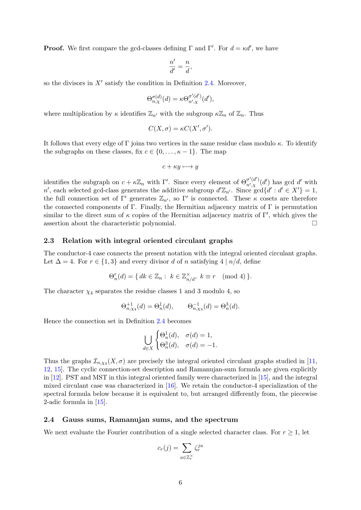
<figcaption class="paper-figure-caption"><b>Fig 5.</b> Low-resolution page preview, page 6</figcaption>
</figure>
</div>

<p><strong>Summary.</strong> This paper rigorously classifies all oriented circulant graphs that support Perfect State Transfer (PST) during a continuous-time quantum walk. By employing advanced number theory involving quadratic Dirichlet characters, the authors prove that PST can only occur if the graph's underlying structure is determined by conductors $\Delta \in \{3, 4, 8\}$. This provides a complete mathematical blueprint for realizing such quantum transport phenomena.</p>
<p><strong>Why it may be interesting.</strong> This work provides a deep mathematical characterization of quantum transport phenomena on structured graphs, which has direct implications for designing quantum communication channels or quantum simulators based on lattice structures.</p>
<details>
<summary>Detailed structure</summary>
<p><strong>Main problem.</strong> The primary goal is to classify all oriented circulant graphs that exhibit Perfect State Transfer (PST) between distinct vertices.</p>
<p><strong>Main result.</strong> PST in these graphs is strictly limited to cases where the graph's structure is governed by conductors $\Delta \in \{3, 4, 8\}$, which corresponds to square-free radicands of 1, 2, and 3.</p>
<p><strong>Method.</strong> The classification uses advanced number theory, specifically properties of odd primitive quadratic Dirichlet characters and Fourier analysis applied to the graph's Hermitian adjacency matrix spectrum.</p>
<p><strong>Model / system.</strong> The model is a continuous-time quantum walk on an oriented circulant graph $    ext{Cay}(\mathbb{Z}_n, C)$. The dynamics are governed by the Hamiltonian derived from the graph's Hermitian adjacency matrix $A$.</p>
<p><strong>Key observables.</strong> Perfect State Transfer (PST) and Multiple State Transfer (MST), which depend directly on the Fourier eigenvalues of the adjacency matrix.</p>
<p><strong>Important parameters / regimes.</strong> The conductor $\Delta$ of the underlying quadratic Dirichlet character, and the graph order $n$.</p>
<p><strong>Assumptions / limitations.</strong> The analysis assumes the graph is finite and simple, relying heavily on number theoretic tools related to characters and gcd-classes.</p>
<p><strong>Figures summary.</strong> Table 2 provides a comprehensive classification summarizing representative graphs exhibiting PST, categorized by their conductor $\Delta$, square-free radicand $\delta$, order $n$, and counts of specific transfer cardinalities ($h$).</p>
<p><strong>Paper structure.</strong> The paper progresses from establishing spectral properties using quadratic characters (Section 2), deriving general state transfer theorems from the spectrum (Section 3), and finally applying these constraints to restrict the possible conductors ($\Delta$) to complete the classification (Section 4).</p>
</details>
<details>
<summary>Abstract</summary>
<p>The continuous-time quantum walk on an oriented circulant graph is determined by the Fourier eigenvalues of its Hermitian adjacency matrix. We classify perfect state transfer (PST) between distinct vertices in every nonempty oriented circulant graph. We show that each such graph is described by an odd primitive quadratic Dirichlet character of conductor $Δ$, a set of gcd-classes, and a choice between the two orientations of each selected class. For a graph of order $n$, we derive an explicit formula for every Fourier eigenvalue without assuming that $n/Δ$ is coprime to $Δ$. We prove that PST occurs only for $Δ\in\{3,4,8\}$ and give necessary and sufficient conditions on the connection set for each conductor. Equivalently, the square-free radicands of oriented circulant graphs with PST are exactly $1$, $2$, and $3$. More generally, when $λ_j=\sqrt{D}η_j$ with $η_j\in\mathbb{Z}$, congruences satisfied by the integers $η_j$ determine all PST pairs and times, the minimum period, and the largest vertex sets supporting multiple state transfer (MST). In this class, pretty good state transfer is equivalent to PST. We also determine the connected orders and enumerate the resulting graphs.</p>
</details>
<p><sub><a href="#top">↑ back to top</a></sub></p>

<p><a id="paper-2608.11330"></a></p>
<h3 id="robust-quantum-machine-learning-for-collider-event-selection-under-detector-variability"><a href="http://arxiv.org/abs/2608.11330v1">Robust Quantum Machine Learning for Collider Event Selection under Detector Variability</a></h3>
<p><strong>Authors:</strong> Christopher Brown, Michael Spannowsky, Simon Williams<br>
<strong>Type:</strong> theory · <strong>Category:</strong> other · <strong>PDF:</strong> <a href="https://arxiv.org/pdf/2608.11330v1">https://arxiv.org/pdf/2608.11330v1</a><br>
<strong>Analysis basis:</strong> full PDF text, analyzed in chunks
<strong>Topic relevance:</strong> <code>quantum measurements</code> <strong>1/5</strong></p>
<div class="figure-strip-hint">↔ Scroll figures horizontally</div>
<div class="paper-figures-scroll">
<figure class="paper-figure-card">
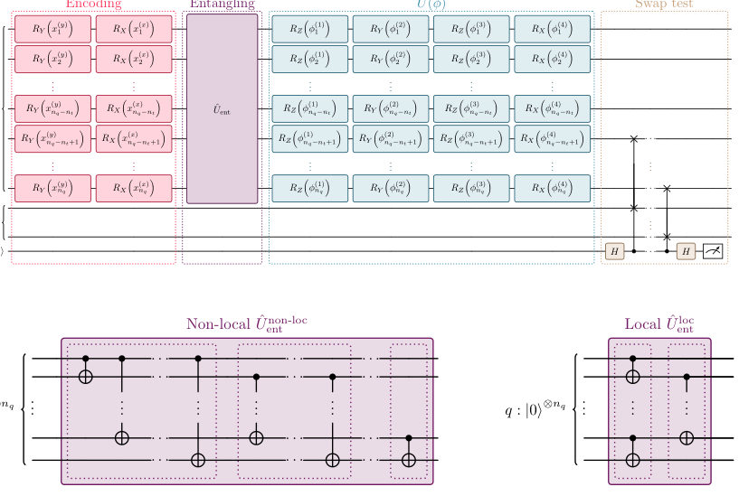
<figcaption class="paper-figure-caption"><b>Fig 1.</b> Figure 1: Quantum autoencoder architecture and entangling ansätze. The circuit (top) consists of angle encoding of the input features using RY and RX rotations, an entangling block Uent, and a parameterised unitary ˆU(ϕ) with trainable parameters ϕ. A swap test evaluates the fidelity between the state of the nt trash qubits and the reference vacuum state |0⟩⊗nt. The non-local and local implementations of Uent, employing long- and short-range cnot connectivity, respectively, are shown below.</figcaption>
</figure>
<figure class="paper-figure-card">
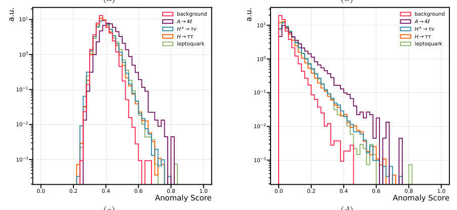
<figcaption class="paper-figure-caption"><b>Fig 2.</b> Figure 2: Anomaly-score distributions obtained under reference detector conditions using the shared MLP embedding. Panels (a)–(d) show the results for the autoencoder, variational autoencoder, non-local quantum autoencoder and local quantum autoencoder, respectively. In each panel, the background distribution is compared with those of the four benchmark signals.</figcaption>
</figure>
<figure class="paper-figure-card">
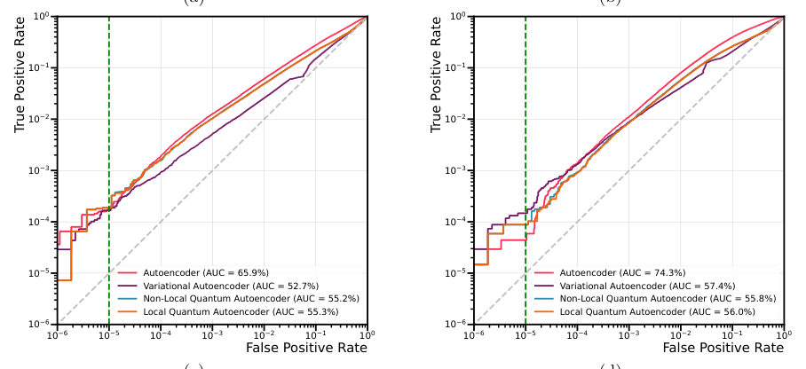
<figcaption class="paper-figure-caption"><b>Fig 3.</b> Figure 3: Anomaly-detection performance in the absence of detector-induced distribution shift using the shared MLP embedding. Panels (a)–(d) show the ROC curves for the A →4ℓ, H± →τν, H →ττ, and leptoquark benchmark signals, respectively. Each panel compares the classical autoencoder, variational autoencoder, non-local quantum autoencoder, and local quantum autoencoder, with the corresponding AUC values quoted in the legends. The vertical dashed line indicates a false-positive rate of 10−5, representative of the low-background operating regime relevant for collider triggers.</figcaption>
</figure>
<figure class="paper-figure-card">
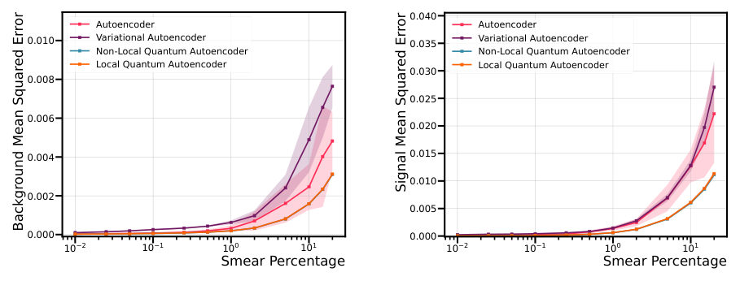
<figcaption class="paper-figure-caption"><b>Fig 4.</b> Figure 4: Mean-squared deviation of the anomaly score from its reference value as a function of the detector-smearing strength. Results are shown for background events in the left panel and A →4ℓevents in the right panel, comparing the classical autoencoder, variational autoencoder, non-local quantum autoencoder and local quantum autoencoder. The model parameters, learned embedding and feature-scaling constants are held fixed throughout. The shaded bands indicate the standard deviation across ten independent slices of the test set with input smearing.</figcaption>
</figure>
<figure class="paper-figure-card">
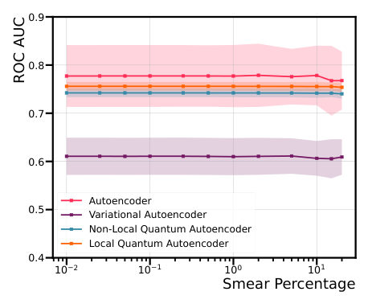
<figcaption class="paper-figure-caption"><b>Fig 5.</b> Figure 5: ROC AUC as a function of the detector-smearing strength for the A →4ℓsample. Results are shown for the classical autoencoder, variational autoencoder, non-local quantum autoencoder and local quantum autoencoder. The model parameters, learned embedding and feature-scaling constants are held fixed throughout. The shaded bands indicate the standard deviation across ten independent slices of the test set with input smearing.</figcaption>
</figure>
</div>

<p><strong>Summary.</strong> This paper evaluates Quantum Machine Learning techniques for selecting rare events in high-energy collider physics. It demonstrates that parameterised quantum models provide an inherent robustness against detector noise and data shifts compared to state-of-the-art classical methods. This suggests QML can be a valuable tool for building reliable analysis pipelines in complex experimental settings.</p>
<p><strong>Why it may be interesting.</strong> While the application is HEP, the core methodology—using quantum circuits to induce a specific inductive bias (robustness) that resists input perturbations better than highly expressive classical models—is relevant for understanding model stability in complex physical systems.</p>
<details>
<summary>Detailed structure</summary>
<p><strong>Main problem.</strong> The core problem is developing machine learning methods robust enough for high-energy physics data analysis that can maintain performance despite detector degradation or shifts in data distributions.</p>
<p><strong>Main result.</strong> Quantum models, specifically Quantum Autoencoders and classifiers, demonstrated superior robustness compared to expressive classical baselines when tested under controlled feature-level smearing.</p>
<p><strong>Method.</strong> The study compares quantum (QAEs) and classical autoencoders/classifiers for both unsupervised anomaly detection and supervised signal classification tasks.</p>
<p><strong>Model / system.</strong> The system is the analysis of collider event data, where models are trained on reference conditions but tested under controlled feature-level smearing to simulate detector variability. The quantum components involve angle encoding and parameterized unitary circuits.</p>
<p><strong>Key observables.</strong> Anomaly detection scores (based on fidelity to vacuum state), discrimination performance retention, and the shift in output score distributions under perturbation.</p>
<p><strong>Important parameters / regimes.</strong> Detector smearing strength (perturbation level) and training sample size ($N_{train}$).</p>
<p><strong>Assumptions / limitations.</strong> The comparison assumes that fixing model parameters while varying input features (smearing) is a valid test of robustness. The study also notes limitations regarding realistic detector systematics and finite-shot statistics.</p>
<p><strong>Figures summary.</strong> Figures compare the Mean Squared Error deviation of anomaly scores for various models (AE, VAE, QAE variants) as a function of increasing detector smearing strength, showing quantum models maintain better stability.</p>
<p><strong>Paper structure.</strong> The paper investigates robustness in two settings: unsupervised anomaly detection using QAEs trained on background events, and supervised classification using data reuploading techniques. Results compare these quantum approaches against established classical ML baselines under simulated noise.</p>
</details>
<details>
<summary>Abstract</summary>
<p>Robust machine-learning methods are becoming increasingly important for high-energy physics data analysis as experiments enter the era of higher luminosity and future higher-energy colliders. Detector degradation, changing running conditions and calibration drift can shift data distributions, causing models trained on clean reference samples to degrade after deployment. We investigate whether parameterised quantum models provide a useful inductive bias for robust collider-event selection in two complementary settings. In the unsupervised study, quantum autoencoders trained on background events are compared with classical and variational autoencoders for anomaly detection. In the supervised study, quantum classifiers with data reuploading are trained to distinguish a supersymmetric signal from background and are compared with linear and multilayer-perceptron classifiers. All models are trained under reference conditions and subsequently evaluated under controlled feature-level smearing while their parameters and preprocessing transformations are held fixed. On clean inputs, the quantum autoencoders achieve competitive anomaly-detection performance, including in the low-false-positive-rate regime relevant for triggering, while the deeper data-reuploading classifier attains discrimination comparable to the non-linear classical baseline. Under smearing, the quantum models generally exhibit smaller shifts in their output scores and retain their discrimination more effectively than the expressive classical baselines. These results suggest that parameterised quantum models can provide a useful robustness inductive bias for collider-event selection and motivate further studies with realistic detector systematics, finite-shot statistics and quantum-device noise.</p>
</details>
<p><sub><a href="#top">↑ back to top</a></sub></p>

<p><a id="paper-2608.11647"></a></p>
<h3 id="the-dirac-information-carrier-for-relativistic-quantum-computation"><a href="http://arxiv.org/abs/2608.11647v1">The Dirac Information Carrier for Relativistic Quantum Computation</a></h3>
<p><strong>Authors:</strong> Barry C Sanders<br>
<strong>Type:</strong> theory · <strong>Category:</strong> quantum information and computing · <strong>PDF:</strong> <a href="https://arxiv.org/pdf/2608.11647v1">https://arxiv.org/pdf/2608.11647v1</a><br>
<strong>Analysis basis:</strong> full PDF text, analyzed in chunks
<strong>Topic relevance:</strong> <code>quantum measurements</code> <strong>1/5</strong></p>
<div class="figure-strip-hint">↔ Scroll figures horizontally</div>
<div class="paper-figures-scroll">
<figure class="paper-figure-card">
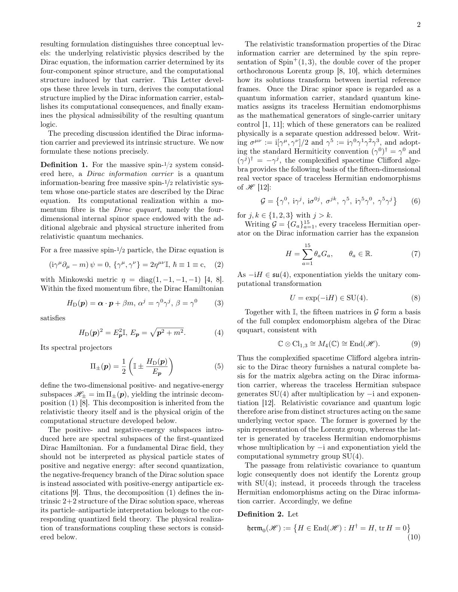
<figcaption class="paper-figure-caption"><b>Fig 1.</b> Low-resolution page preview, page 2</figcaption>
</figure>
<figure class="paper-figure-card">

<figcaption class="paper-figure-caption"><b>Fig 2.</b> Low-resolution page preview, page 3</figcaption>
</figure>
<figure class="paper-figure-card">

<figcaption class="paper-figure-caption"><b>Fig 3.</b> Low-resolution page preview, page 4</figcaption>
</figure>
<figure class="paper-figure-card">

<figcaption class="paper-figure-caption"><b>Fig 4.</b> Low-resolution page preview, page 5</figcaption>
</figure>
<figure class="paper-figure-card">

<figcaption class="paper-figure-caption"><b>Fig 5.</b> Low-resolution page preview, page 6</figcaption>
</figure>
</div>

<p><strong>Summary.</strong> This work rethinks quantum computation by deriving its computational structure from the relativistic description of a massive spin-1/2 particle (the Dirac carrier). It shows that this intrinsic structure imposes limitations on possible quantum gates, distinguishing between mathematical symmetries and physically realizable operations. Ultimately, it provides necessary and sufficient conditions for achieving full control over this fundamental information carrier.</p>
<p><strong>Why it may be interesting.</strong> It provides a rigorous theoretical framework linking fundamental particle physics symmetries (Dirac equation) directly to the constraints on quantum computation, offering a physical basis for gate sets beyond abstract assumptions.</p>
<details>
<summary>Detailed structure</summary>
<p><strong>Main problem.</strong> The paper addresses how computational structure can be derived intrinsically from a fundamental relativistic quantum system, rather than assuming abstract carriers first.</p>
<p><strong>Main result.</strong> It establishes the Dirac information carrier as a source of a constrained quantum logic (sector-preserving and sector-coupling gates) whose full controllability requires specific physical resources beyond simple unitary transformations.</p>
<p><strong>Method.</strong> The analysis uses group theory applied to the symmetry algebra ($\mathfrak{su}(4)$) governing the spin-1/2 system, distinguishing between mathematical unitaries and physically admissible quantum logic gates.</p>
<p><strong>Model / system.</strong> The model is the massive spin-1/2 particle described by the Dirac equation. The resulting information carrier is termed the 'Dirac ququart,' possessing an intrinsic positive- and negative-energy decomposition ($H_+ \oplus H_-$).</p>
<p><strong>Key observables.</strong> Admissible quantum logic gates, sector coherence, and controllability conditions.</p>
<p><strong>Important parameters / regimes.</strong> Mass ($m$), momentum ($\vec{p}$), and the structure of the Poincaré representation.</p>
<p><strong>Assumptions / limitations.</strong> The core assumption is that computational structure must arise from the intrinsic symmetries dictated by relativistic field theory (Dirac equation).</p>
<p><strong>Figures summary.</strong> Not specified in the notes, but the mathematical flow involves mapping generators from $   ext{Spin}^+(1, 3)$ through the Dirac carrier to $SU(4)$.</p>
<p><strong>Paper structure.</strong> The paper first derives the intrinsic computational structure from the positive/negative energy decomposition of the Dirac equation. It then analyzes the symmetry group ($SU(4)$) and defines physically admissible gates. Finally, it uses group theory (normalizers) to determine the necessary conditions for achieving full single-carrier controllability.</p>
</details>
<details>
<summary>Abstract</summary>
<p>Quantum computation has traditionally been formulated by postulating abstract information carriers and subsequently identifying physical systems that realize them. We adopt the opposite viewpoint and ask what computational structure is supplied by a fundamental relativistic quantum system itself. Focusing on the simplest nontrivial massive spin carrier, spin-1/2, we show that its relativistic description supplies a native four-dimensional information carrier through the Dirac equation. The resulting Dirac information carrier possesses an intrinsic positive- and negative-energy decomposition that induces a physics-constrained computational structure comprising sector-preserving and sector-coupling quantum logic. Restricting the relativistic computational structure to the positive-energy sector and taking the nonrelativistic regime recovers the familiar Pauli qubit description. We distinguish mathematical unitary transformations from physically admissible gates and show how charge-conjugation structure, charge superselection, and associated reference-frame resources can constrain quantum logic beyond the sector-preserving structure. Finally, under appropriate physical assumptions, we establish the conditions under which this structure supports full single-carrier controllability. Our work establishes the Dirac information carrier as the massive spin-1/2 instance of a broader programme in which computational structures are derived from the relativistic representation carried by the underlying physical system.</p>
</details>
<p><sub><a href="#top">↑ back to top</a></sub></p>

<p><a id="paper-2608.12135"></a></p>
<h3 id="the-min-rains-relative-entropy-is-not-tight-for-exact-ppt-entanglement-distillation"><a href="http://arxiv.org/abs/2608.12135v1">The Min-Rains Relative Entropy Is Not Tight for Exact PPT Entanglement Distillation</a></h3>
<p><strong>Authors:</strong> Chengkai Zhu, Xin Wang<br>
<strong>Type:</strong> theory · <strong>Category:</strong> quantum information and computing · <strong>PDF:</strong> <a href="https://arxiv.org/pdf/2608.12135v1">https://arxiv.org/pdf/2608.12135v1</a><br>
<strong>Analysis basis:</strong> full PDF text, analyzed in chunks
<strong>Topic relevance:</strong> <code>quantum measurements</code> <strong>1/5</strong></p>
<div class="figure-strip-hint">↔ Scroll figures horizontally</div>
<div class="paper-figures-scroll">
<figure class="paper-figure-card">

<figcaption class="paper-figure-caption"><b>Fig 1.</b> Low-resolution page preview, page 2</figcaption>
</figure>
<figure class="paper-figure-card">

<figcaption class="paper-figure-caption"><b>Fig 2.</b> Low-resolution page preview, page 3</figcaption>
</figure>
<figure class="paper-figure-card">

<figcaption class="paper-figure-caption"><b>Fig 3.</b> Low-resolution page preview, page 4</figcaption>
</figure>
<figure class="paper-figure-card">

<figcaption class="paper-figure-caption"><b>Fig 4.</b> Low-resolution page preview, page 5</figcaption>
</figure>
<figure class="paper-figure-card">

<figcaption class="paper-figure-caption"><b>Fig 5.</b> Low-resolution page preview, page 6</figcaption>
</figure>
</div>

<p><strong>Summary.</strong> This paper resolves an open problem by proving that the min-Rains relative entropy does not provide a tight upper bound for exact distillable entanglement under PPT operations. The authors construct explicit counterexamples using specific bipartite states to demonstrate a strict separation between the true distillation rate and the theoretical bound, revealing subtle asymptotic structures in quantum information theory.</p>
<p><strong>Why it may be interesting.</strong> This work provides fundamental theoretical constraints on quantum information processing, specifically refining our understanding of entanglement manipulation under physical constraints like PPT operations, which is crucial for designing quantum communication protocols.</p>
<details>
<summary>Detailed structure</summary>
<p><strong>Main problem.</strong> The central question is whether the min-Rains relative entropy provides a tight upper bound for the regularized exact PPT distillable entanglement of a bipartite quantum state.</p>
<p><strong>Main result.</strong> The authors prove that the min-Rains relative entropy is not always tight, establishing a strict inequality between the true distillable rate and the min-Rains bound using specific counterexamples.</p>
<p><strong>Method.</strong> The proof involves constructing two independent bounds—an upper bound derived from a range-supported tensor witness and a lower bound related to the min-Rains relative entropy—and showing they are strictly separated for certain states.</p>
<p><strong>Model / system.</strong> The analysis concerns bipartite quantum states undergoing exact entanglement distillation under completely PPT-preserving operations. The focus is on the support projection $P$ of the input state, often analyzed using rank-three qutrit systems as a concrete counterexample.</p>
<p><strong>Key observables.</strong> Regularized exact PPT distillable entanglement ($E_{\infty}^{0,	ext{PPT}}(
ho)$), min-Rains relative entropy ($R_{\min}(
ho)$), and the witness values ($\mu = \|T\Gamma\|_1$ and $\|R\Gamma\|_{\infty}$).</p>
<p><strong>Important parameters / regimes.</strong> The comparison relies on specific numerical ratios derived from the state support, such as $391/250$ versus $6393/10000$.</p>
<p><strong>Assumptions / limitations.</strong> The analysis assumes the existence of completely PPT-preserving operations and utilizes techniques involving partial transposition ($\Gamma$) and tensor witnesses.</p>
<p><strong>Figures summary.</strong> Not specified in the notes, but the comparison relies on establishing strict inequalities between calculated numerical bounds derived from witness operators.</p>
<p><strong>Paper structure.</strong> The paper first defines the problem by comparing $E_{\infty}^{0,	ext{PPT}}(
ho)$ to $R_{\min}(
ho)$. It then develops the necessary mathematical tools (range witnesses and dual certificates) to establish both an upper bound ($\log \mu$) and a lower bound ($-\log M(P)$), culminating in a concrete counterexample showing the separation.</p>
</details>
<details>
<summary>Abstract</summary>
<p>Exact entanglement distillation converts a noisy bipartite state into a maximally entangled state with zero error. Under completely PPT-preserving operations, the additive min-Rains relative entropy provides a single-letter upper bound on the regularized distillation rate. An interesting problem in entanglement theory dating back to 2016 has been whether this bound is always tight. Here we resolve this question in the negative. The key is a tensor-stable rigidity absent from the min-Rains relaxation: every feasible exact-distillation effect must act as the identity on the support of the input state. We convert this constraint into a new single-letter upper bound using a generally non-Hermitian, range-supported witness. For a rank-three subspace, we show this upper bound lies strictly below the min-Rains relative entropy for every state with that support. Thus, the constraint discarded by the min-Rains relaxation remains relevant under arbitrary tensor powers. Our result rules out the min-Rains relative entropy as a closed-form formula for exact PPT distillable entanglement and reveals the subtle asymptotic structure of exact entanglement manipulation under PPT operations.</p>
</details>
<p><sub><a href="#top">↑ back to top</a></sub></p>

<p><a id="paper-2608.11516"></a></p>
<h3 id="trapping-sets-of-detector-error-models"><a href="http://arxiv.org/abs/2608.11516v1">Trapping Sets of Detector Error Models</a></h3>
<p><strong>Authors:</strong> Michele Pacenti, Nithin Raveendran, Bane Vasic<br>
<strong>Type:</strong> theory · <strong>Category:</strong> quantum information and computing · <strong>PDF:</strong> <a href="https://arxiv.org/pdf/2608.11516v1">https://arxiv.org/pdf/2608.11516v1</a><br>
<strong>Analysis basis:</strong> full PDF text, analyzed in chunks
<strong>Topic relevance:</strong> <code>quantum measurements</code> <strong>1/5</strong></p>
<div class="figure-strip-hint">↔ Scroll figures horizontally</div>
<div class="paper-figures-scroll">
<figure class="paper-figure-card">

<figcaption class="paper-figure-caption"><b>Fig 1.</b> Figure 1: Comparison between the Monte Carlo simulation of RelayBP and the error-floor estimate obtained from weight-three and weight-four fault patterns supported on the enumerated LETSs. Both curves show the effective logical error rate per syndrome-extraction round.</figcaption>
</figure>
<figure class="paper-figure-card">

<figcaption class="paper-figure-caption"><b>Fig 2.</b> Figure 2: Comparison between the Monte Carlo simulation of ImpulseBP and the error-floor estimate obtained from weight-three and weight-four fault patterns supported on the enumerated LETSs. Both curves show the effective logical error rate per syndrome-extraction round.</figcaption>
</figure>
<figure class="paper-figure-card">

<figcaption class="paper-figure-caption"><b>Fig 3.</b> Figure 2 compares the Monte Carlo simulation of ImpulseBP with the corresponding LETS-based estimate. We use ImpulseBP(20, 6), as defined in Ref. [8], with 20 parallel constituent decoders, six residual reinitializa- tions, and at most 100 iterations for each constituent de- coder. The estimate lies below the simulated curve but remains within one order of magnitude in the low-error- rate regime. The class-level results in Table III follow the same qualitative pattern as those obtained for RelayBP. No failures occur in the (4, 0), (4, 2), (4, 3), (5, 0), or (5, 2) classes. The largest failing-instance fractions again oc- cur for (4, 4) and (5, 3), with fTS = 0.4272% and fTS = 0.2638%,...</figcaption>
</figure>
<figure class="paper-figure-card">

<figcaption class="paper-figure-caption"><b>Fig 4.</b> Figure 3: Comparison between the Monte Carlo simulation of ELMS and the error-floor estimate obtained from weight-three and weight-four fault patterns supported on the enumerated LETSs. Both curves show the effective logical error rate per syndrome-extraction round.</figcaption>
</figure>
<figure class="paper-figure-card">

<figcaption class="paper-figure-caption"><b>Fig 5.</b> Figure 4: Canonical representatives of the three LETS topology classes forming the top-three set for both RelayBP and ImpulseBP. The same structures remain highly ranked for ELMS: τ1, τ2, and τ3 have ranks 6, 10, and 17, respectively, among its 647 harmful topology classes. Circles represent variable nodes and squares represent check nodes; white and black squares indicate satisfied and unsatisfied checks, respectively.</figcaption>
</figure>
</div>

<p><strong>Summary.</strong> This paper develops a systematic framework to predict the error floor in quantum error correction codes by analyzing their detector error models. It uses exhaustive enumeration of 'trapping sets'—specific graph structures causing decoding failure—to bypass costly simulations. The results establish trapping-set analysis as a powerful tool for guiding the joint design of both quantum codes and decoding algorithms.</p>
<p><strong>Why it may be interesting.</strong> The methodology of using structural analysis (trapping sets) to predict performance limits is highly relevant for designing robust quantum computation protocols by identifying inherent hardware/algorithmic weaknesses.</p>
<details>
<summary>Detailed structure</summary>
<p><strong>Main problem.</strong> The work aims to understand the structural weaknesses of message-passing decoders used for quantum error correction in the low-error-rate regime.</p>
<p><strong>Main result.</strong> Trapping-set analysis provides a practical framework that accurately predicts the achievable error floor for iterative decoders, revealing performance gaps between code distance and actual decoding capability.</p>
<p><strong>Method.</strong> The authors introduce a systematic framework involving exhaustive enumeration of 'trapping sets' directly applied to the detector error model (DEM) of QLDPC codes.</p>
<p><strong>Model / system.</strong> The study analyzes Quantum Low-Density Parity-Check (QLDPC) codes under circuit-level noise, modeled via their Detector Error Model (DEM). The analysis focuses on message-passing decoders like RelayBP and ImpulseBP.</p>
<p><strong>Key observables.</strong> Error floor (minimum logical error rate), Trapping Sets (TSs), low-weight fault configurations, and the gap between code distance and practical performance.</p>
<p><strong>Important parameters / regimes.</strong> Low-error-rate regime, circuit-level noise, weight of error patterns, and the structure of the Tanner graph associated with the DEM.</p>
<p><strong>Assumptions / limitations.</strong> The analysis relies on restricting the search to 'leafless elementary trapping sets' (LETSs), which is motivated by classical LDPC literature but its applicability to QLDPC/DEMs is noted as an assumption.</p>
<p><strong>Paper structure.</strong> The paper systematically defines the DEM structure based on fault origins ($D(r)$, $A(r)$, $U(r)$) derived from circuit scheduling, then applies graph theory algorithms (like dpl-search) to enumerate LETSs, and finally evaluates these sets against various iterative decoders.</p>
</details>
<details>
<summary>Abstract</summary>
<p>Message-passing decoders are among the most promising candidates for scalable quantum error correction, yet their behavior in the low-error-rate regime remains poorly understood under realistic circuit-level noise. In this work, we introduce a systematic framework for identifying the graph structures that govern decoder failures and for using them to predict the resulting error floor. We apply exhaustive trapping-set enumeration directly to the detector error model of a bivariate bicycle code and test all low-weight fault configurations supported on the resulting structures. This converts the analysis of extremely rare logical failures into a finite structural search, avoiding the prohibitive cost of direct Monte Carlo simulation. We evaluate the framework on three iterative decoders with substantially different architectures and decoding heuristics. Remarkably, for \texttt{RelayBP}, the resulting prediction accurately reproduces the simulated error floor; for the others, it remains within the same order of magnitude. Despite their differences, leafless elementary trapping sets capture a substantial part of the low-weight error-floor contribution for all three decoders. Moreover, each decoder admits failures caused by fault configurations well below the correction capability implied by the circuit-level distance, revealing a substantial gap between code distance and practical iterative-decoding performance. These results establish trapping-set analysis as a practical framework for predicting error floors, exposing the structural weaknesses of iterative decoders, and guiding the joint design of decoding algorithms.</p>
</details>
<p><sub><a href="#top">↑ back to top</a></sub></p>
<h2 id="other-papers-8">Other papers (8)</h2>
<p><em>Papers from primary archives without highlighted authors or any topic match. Click to expand.</em></p>
<details>
<summary>Show other papers</summary>

<p><a id="paper-2608.11733"></a></p>
<h3 id="a-12-cnot-double-qubit-excitation-gate"><a href="http://arxiv.org/abs/2608.11733v1">A 12-CNOT Double Qubit Excitation Gate</a></h3>
<p><strong>Authors:</strong> Irfansha Shaik<br>
<strong>Type:</strong> theory · <strong>Category:</strong> quantum information and computing · <strong>PDF:</strong> <a href="https://arxiv.org/pdf/2608.11733v1">https://arxiv.org/pdf/2608.11733v1</a><br>
<strong>Analysis basis:</strong> full PDF text, analyzed in chunks</p>
<div class="figure-strip-hint">↔ Scroll figures horizontally</div>
<div class="paper-figures-scroll">
<figure class="paper-figure-card">

<figcaption class="paper-figure-caption"><b>Fig 1.</b> Figure 2 A 14-CNOT decomposed double-excitation circuit with C3Ry(2θ) Gray-code expansion.</figcaption>
</figure>
<figure class="paper-figure-card">

<figcaption class="paper-figure-caption"><b>Fig 2.</b> Figure 3 A 13-CNOT double-excitation gate by Yordanov et al. [21, 20] with lowest CNOT depth (11) cf. Table 1. The two highlighted gates on qk are added to correct the original circuit.</figcaption>
</figure>
</div>
<p><strong>Summary.</strong> This paper presents a highly optimized quantum circuit decomposition for the double qubit excitation gate. The authors achieved a record low CNOT count of 12, significantly improving upon previous state-of-the-art implementations. This research is vital for advancing practical quantum computing by minimizing required physical resources like gates and depth.</p>
<p><strong>Why it may be interesting.</strong> This work directly addresses resource optimization in quantum circuit design, which is crucial for mapping complex theoretical gates onto near-term hardware architectures used in AMO simulations.</p>
<details>
<summary>Detailed structure</summary>
<p><strong>Main problem.</strong> The core problem is achieving an effective implementation of high-level quantum gates, specifically the Double Qubit Excitation Operator ($U_{klij}(	heta)$), for practical quantum computation.</p>
<p><strong>Main result.</strong> The authors report a novel decomposition requiring only 12 CNOT gates, which sets new state-of-the-art records for CNOT count (12), CNOT depth (10), and total circuit depth (16).</p>
<p><strong>Method.</strong> They developed a specific quantum circuit decomposition technique based on the double qubit excitation operator's definition, comparing it against existing methods like Gray-code expansion.</p>
<p><strong>Model / system.</strong> The work analyzes gate implementation within a 4-qubit system using the computational basis ordering $|q_i q_j q_k q_l\rangle$. The target operation is a continuous rotation between states $|0011\rangle$ and $|1100\rangle$.</p>
<p><strong>Key observables.</strong> CNOT count, CNOT depth, single-qubit gate count, and total circuit depth are the primary metrics used for comparison.</p>
<p><strong>Important parameters / regimes.</strong> The rotation angle $\theta$ is a key parameter defining the excitation operator; the system size is 4 qubits.</p>
<p><strong>Assumptions / limitations.</strong> The analysis assumes that comparing these specific gate counts and depths across different synthesis techniques (e.g., Clifford Synthesis) provides a valid measure of circuit efficiency.</p>
<p><strong>Figures summary.</strong> Figures illustrate the high-level double-excitation operator structure, baseline 14-CNOT circuits, previous SOTA 13-CNOT circuits, and finally, the proposed optimized 12-CNOT circuit.</p>
<p><strong>Paper structure.</strong> The paper introduces the necessity of implementing complex gates, defines the target operator, presents a comparison against existing state-of-the-art methods using metrics like CNOT count, and concludes by detailing their superior 12-CNOT decomposition.</p>
</details>
<details>
<summary>Abstract</summary>
<p>Effective implementation of high-level quantum gates is essential for practical quantum computing. To the best of our knowledge, we present the first reported 12-CNOT decomposition of the double qubit excitation operator, improving upon state-of-the-art (SOTA) implementations with 13 CNOTs. Our new circuit has the lowest CNOT count (12), lowest CNOT depth (10), and lowest total circuit depth (16) among all the previous SOTA circuits. Further, we only added 2 extra one-qubit gates compared to the lowest one-qubit gate count (11) among the previous SOTA circuits.</p>
</details>
<p><sub><a href="#top">↑ back to top</a></sub></p>

<p><a id="paper-2608.11648"></a></p>
<h3 id="a-quantumclassical-example-oracle-separation-for-making-things-up"><a href="http://arxiv.org/abs/2608.11648v1">A Quantum/Classical Example Oracle Separation for Making Things Up</a></h3>
<p><strong>Authors:</strong> Kenny Chen<br>
<strong>Type:</strong> theory · <strong>Category:</strong> quantum information and computing · <strong>PDF:</strong> <a href="https://arxiv.org/pdf/2608.11648v1">https://arxiv.org/pdf/2608.11648v1</a><br>
<strong>Analysis basis:</strong> full PDF text, analyzed in chunks</p>
<div class="figure-strip-hint">↔ Scroll figures horizontally</div>
<div class="paper-figures-scroll">
<figure class="paper-figure-card">

<figcaption class="paper-figure-caption"><b>Fig 1.</b> Figure 1: Sweke et al. showed a separation between learners with classical computation and learners with quantum computation when both had only classical examples. It is an open question as to whether there is a separation between quantum learners when one only has classical examples and the other has quantum examples.</figcaption>
</figure>
<figure class="paper-figure-card">

<figcaption class="paper-figure-caption"><b>Fig 2.</b> Figure 2: Illustration of our PAC learning setting. An auxiliary function g induces a concept class Cg. The PAC learning algorithm has oracle access to g and examples from Cg. They must output a learner/generator, which operates with oracle access to g, but no further examples from Cg.</figcaption>
</figure>
</div>
<p><strong>Summary.</strong> This paper tackles a foundational question in quantum learning theory: whether quantum examples offer an advantage over classical ones. Using complexity arguments relative to oracles, the authors prove that such a separation exists for generating certain distribution classes. This advances the understanding of where quantum resources provide strictly more computational power than classical ones in machine learning contexts.</p>
<p><strong>Why it may be interesting.</strong> While highly theoretical, demonstrating computational separations between classical and quantum resources in learning theory provides fundamental insights into the limits of quantum computation that could inform resource requirements for simulating complex physical systems.</p>
<details>
<summary>Detailed structure</summary>
<p><strong>Main problem.</strong> The paper investigates whether quantum examples provide a computational advantage over classical examples when performing learning tasks within the PAC framework.</p>
<p><strong>Main result.</strong> It demonstrates that, relative to an oracle, there exist distribution classes that can be efficiently generated by a quantum learner using quantum examples but cannot be generated by a quantum learner restricted to only classical examples.</p>
<p><strong>Method.</strong> The authors use computational complexity theory, building on one-way permutations and establishing separations between the sample complexity required for generation/learning under quantum versus classical access models.</p>
<p><strong>Model / system.</strong> The setting is theoretical learning theory (PAC framework), utilizing abstract concepts like concept classes induced by auxiliary functions ($g$) and relying on computational hardness assumptions related to inverting one-way permutations.</p>
<p><strong>Key observables.</strong> The ability to efficiently PAC generate a distribution class, quantified by the required sample complexity advantage between quantum and classical access methods.</p>
<p><strong>Important parameters / regimes.</strong> The existence of an oracle for a one-way permutation ($g$), and parameters related to pseudoperiods ($\varepsilon(f, a)$) in specific constructions.</p>
<p><strong>Assumptions / limitations.</strong> Results are shown relative to the assumption of oracle access to auxiliary functions (like $g$) and rely on the assumed existence of quantum-resilient one-way permutations.</p>
<p><strong>Figures summary.</strong> Figure 1 illustrates separations between classical/quantum computation power; Figure 2 depicts the PAC learning setting using an inducing function $g$; Figure 3 shows a quadrilateral structure related to pseudoperiods.</p>
<p><strong>Paper structure.</strong> The paper progresses by first establishing general oracle separations (Theorem 1.2), then presenting the main result showing quantum example advantage for generation (Theorem 1.3), and finally detailing a specific separation using Simon's algorithm context based on pseudoperiods (Theorem 4.2).</p>
</details>
<details>
<summary>Abstract</summary>
<p>We study the power of quantum examples, as compared to classical examples, in the PAC learning framework. Here, we have two learning algorithms, both with access to quantum computation, but one gets quantum examples, whereas the other gets classical examples. It was previously unknown whether there were learning tasks that can be efficiently performed but not by the latter. Our primary result is to show that relative to an oracle, there are distributions that can be efficiently generated by a quantum learner with access to quantum examples, but not by a quantum learner with access to only classical examples, making progress to answering this question in the affirmative.</p>
</details>
<p><sub><a href="#top">↑ back to top</a></sub></p>

<p><a id="paper-2608.11848"></a></p>
<h3 id="a-uniform-elliptic-reduction-an-order-matching-criterion-and-precision-benchmarks-for-the-strong-coupling-birman-schwinger-analysis-of-the-lattice-three-boson-trimer"><a href="http://arxiv.org/abs/2608.11848v1">A uniform elliptic reduction, an order-matching criterion, and precision benchmarks for the strong-coupling Birman-Schwinger analysis of the lattice three-boson trimer</a></h3>
<p><strong>Authors:</strong> Mikhail Dolgopolov<br>
<strong>Type:</strong> theory · <strong>Category:</strong> other · <strong>PDF:</strong> <a href="https://arxiv.org/pdf/2608.11848v1">https://arxiv.org/pdf/2608.11848v1</a><br>
<strong>Analysis basis:</strong> full PDF text, analyzed in chunks</p>
<div class="figure-strip-hint">↔ Scroll figures horizontally</div>
<div class="paper-figures-scroll">
<figure class="paper-figure-card">

<figcaption class="paper-figure-caption"><b>Fig 1.</b> Low-resolution page preview, page 2</figcaption>
</figure>
<figure class="paper-figure-card">

<figcaption class="paper-figure-caption"><b>Fig 2.</b> Low-resolution page preview, page 3</figcaption>
</figure>
<figure class="paper-figure-card">

<figcaption class="paper-figure-caption"><b>Fig 3.</b> Low-resolution page preview, page 4</figcaption>
</figure>
<figure class="paper-figure-card">

<figcaption class="paper-figure-caption"><b>Fig 4.</b> Low-resolution page preview, page 5</figcaption>
</figure>
<figure class="paper-figure-card">

<figcaption class="paper-figure-caption"><b>Fig 5.</b> Low-resolution page preview, page 6</figcaption>
</figure>
</div>
<p><strong>Summary.</strong> This paper tackles the complex problem of finding the precise ground-state energy asymptotics for interacting bosons on a lattice using the Birman-Schwinger method. The authors introduce a powerful order-matching criterion to determine when simple asymptotic expansions are insufficient, allowing them to derive complete results that are cross-validated numerically against an exact closed-form benchmark.</p>
<p><strong>Why it may be interesting.</strong> The rigorous development of the order-matching criterion provides a general tool for analyzing strong-coupling limits in lattice many-body physics, which is crucial for accurately determining physical constants beyond leading-order approximations.</p>
<details>
<summary>Detailed structure</summary>
<p><strong>Main problem.</strong> The study focuses on determining the precise strong-coupling ground-state asymptotics for a lattice three-boson system using the Birman-Schwinger analysis.</p>
<p><strong>Main result.</strong> The authors derived the complete strong-coupling ground-state asymptotics at $K=\pi$, including the coefficient of the $O(1/\mu)$ term, and established a general order-matching criterion for such analyses.</p>
<p><strong>Method.</strong> The methodology combines an exact closed-form benchmark derived from a K-uniform elliptic reduction with a newly formulated order-matching criterion to rigorously determine necessary asymptotic refinements.</p>
<p><strong>Model / system.</strong> The system is the three-boson Schrödinger operator on a lattice ($\mathbb{Z}^2$) with pairwise contact interactions, analyzed in the strong-coupling limit ($\mu 	o \infty$).</p>
<p><strong>Key observables.</strong> Ground-state energy asymptotics ($z_\pi(1/\mu)$), spectral gap, and the fiber Fredholm determinant $\Delta_\mu$.</p>
<p><strong>Important parameters / regimes.</strong> Interaction strength ($\mu$), total quasimomentum ($K$), and the lattice momentum $p$.</p>
<p><strong>Assumptions / limitations.</strong> The analysis relies on asymptotic expansion techniques for eigenvalues derived from the Birman-Schwinger operator, requiring careful application of the order-matching criterion.</p>
<p><strong>Figures summary.</strong> Tables compare exact vs. leading-order Fredholm determinants at $K=\pi$, and show numerical convergence confirming the derived asymptotic constants.</p>
<p><strong>Paper structure.</strong> The paper first introduces the Birman-Schwinger framework, then derives an elliptic reduction for the determinant, formulates and proves the order-matching criterion (Lemma 4.2), applies this to find the full asymptotics at $K=\pi$, and finally compares results with known cases like $K=0$.</p>
</details>
<details>
<summary>Abstract</summary>
<p>We study the strong-coupling Birman-Schwinger analysis of the three-boson lattice Schroedinger operator at the exceptional quasimomentum K = pi. First, we provide an exact closed-form benchmark for the fiber Fredholm determinant at a distinguished flat momentum, valid for every quasimomentum K, obtained via a uniform elliptic reduction of the two-dimensional lattice integral. Second, we formulate and prove a general order-matching criterion. This criterion decides whether a leading-order Fredholm determinant asymptotic, with relative accuracy of order 1/mu, suffices to determine the constant-order additive correction in the strong-coupling energy, or if the next-order refinement is required. Applying the criterion at K = pi, we derive the complete strong-coupling ground-state asymptotics, including the coefficient of the order 1/mu term. The results are cross-validated against the exact closed-form benchmark and two independent high-precision numerical schemes. Furthermore, we determine the corresponding spectral gap and prove an exact Fredholm-determinant underestimation factor equal to 2. Additionally, we independently confirm that the previously established K = 0 constant is correctly derived and requires no analogous refinement. Finally, we compare the orders of asymptotic precision controlled across recent lattice few-body models and draw a structural parallel with the parity classification of topological band structures.</p>
</details>
<p><sub><a href="#top">↑ back to top</a></sub></p>
<hr>
<p>
<a href="index.html">← Index</a>
 · <a href="papers_03.html">← Previous</a> · <a href="papers_05.html">Next →</a>
</p>
<hr>

</body>
</html>
